Telemetria 2026 - 2027
Stasi Samuele - 25/09/2026 Nominativo progetto - Julia
Obiettivo del progetto
L'obiettivo è progettare produrre e programmare una scheda di telemetria che supporti sia l'acquisizione dati in locale che la telemetria wireless. La motivazione che ci ha spinto ad iniziare il presente progetto è la necessità di avere un supporto tecnologico più robusto, sia dal punto di vista elettrico che dal punto di vista della trasmissione dati.
La scheda utilizzerà una trasmissione LoRa a 2.4GHz per garantire un'adeguata portata del segnale e una relativamente alta sopportazione dei disturbi elettromagnetici. A supporto di future necessità verrà scelto un modulo di trasmissione che sia in grado di trasmettere anche segnali in modalità FSK e FLRC, che gli sbloccano una capacità di canale molto più ampia se ci si trova entro una data distanza. Maggiori informazioni verranno fornite nel prossimo capitolo.
Per la persistenza in locale si è optato per una semplice scheda MicroSD.
I dati verranno ricevuti dalla scheda attraverso una linea CAN FD.
Per semplicità di progettazione la ground station sarà la copia della stazione in auto.
Requisiti
I requisiti fissano cosa il sistema deve garantire e con quale criterio verrà verificato. I valori segnati come proposta sono stime iniziali, da confermare con il team e con le prove in pista.
Requisiti funzionali
| ID | Requisito | Valore | Verifica |
|---|---|---|---|
| F1 | Salvare in locale tutti i pacchetti ricevuti dal CAN FD, alla frequenza originale e senza perdite | TelemetryPacket_t a 200 Hz, EMMA a 5 Hz |
Confronto tra numeri di sequenza e log SD |
| F2 | Trasmettere via radio un sottoinsieme dei dati alla ground station | vedi tabella dei contenuti per gradino | Prove in pista |
| F3 | Adattare automaticamente modulazione e data rate alla qualità del collegamento (ADR) | scala dei modi 1–9 | Simulatore e prove in pista |
| F4 | Collegamento bidirezionale: la ground station invia alla vettura le metriche del link e i comandi di cambio modo | — | Prove al banco |
| F5 | Recuperare il collegamento dopo una perdita di sincronizzazione senza intervento manuale | entro 5 s dal ritorno del segnale | Prova di disconnessione forzata |
| F6 | Segnalare a terra l'età di ogni dato, il modo in uso, il margine e il PER | — | Ispezione della GUI |
Requisiti di prestazione
| ID | Requisito | Valore | Verifica |
|---|---|---|---|
| P1 | Copertura | tutto il circuito, distanza massima box–vettura | Prove in pista |
| P2 | Packet Error Rate in regime stazionario | ≤ 5% | Statistica sui numeri di sequenza |
| P3 | Latenza dal CAN alla GUI, modi FLRC e FSK | ≤ 100 ms | Timestamp a bordo e a terra |
| P4 | Latenza dal CAN alla GUI, modi LoRa | ≤ 1 s (proposta), esclusi i modi di emergenza | Timestamp a bordo e a terra |
| P5 | Margine minimo nel modo in uso | \(LM \ge LM_{min} = 6\) dB | Log dell'ADR |
| P6 | Payload massimo di un pacchetto radio | 127 B, su tutti i modi | Per costruzione |
Vincoli
| ID | Vincolo | Valore | Riferimento |
|---|---|---|---|
| V1 | Potenza irradiata | EIRP < 10 dBm (progetto: 9 dBm) | EN 300 328, 4.3.2.4.1 / 4.3.2.5.1 / 4.3.2.6.1 |
| V2 | Banda | 2400–2483,5 MHz, canale fisso | EN 300 328, clausola 1 |
| V3 | Ingresso dati | CAN FD | Architettura della vettura |
| V4 | Ground station | stesso hardware della scheda di bordo | Scelta di progetto |
| V5 | Disponibilità per la stagione corrente | nessuna soluzione con FHSS/LBT nella prima versione | Sezione Normative |
Contenuto trasmesso per gradino
| Gradini | Modi | Contenuto | Frequenza |
|---|---|---|---|
| 5–9 | FLRC, FSK | Pacchetto completo + EMMA | 20 Hz + 5 Hz |
| 4 | LoRa SF7/812 | Pacchetto ridotto (≤ 127 B) + EMMA ridotto | 10–20 Hz + 1 Hz |
| 3 | LoRa SF9/812 | Pacchetto ridotto | ~5 Hz |
| 1–2 | LoRa SF11, SF12 | Pacchetto di emergenza (~32 B: stati, errori, SDC, temperature critiche, SoC) | 0,5–1 Hz |
I limiti di frequenza derivano dal tempo in aria: a SF7/812 un pacchetto da 127 B occupa circa 33 ms, quindi a 20 Hz il canale è occupato per circa il 66% del tempo, senza contare gli ACK; a SF12/406 un pacchetto da 32 B occupa circa 640 ms.
Gestione della Banda
Questa sezione del documento punta a verificare che il carico di dati sia in linea con la capacità di canale di LoRa. Qualora non fosse sufficiente si esploreranno alcuni possibili algoritmi per introdurre un datarate variabile basato sulle misurazione in tempo reale della potenza del segnale da parte del modulo di trasmissione integrato.
Il firmware dell'ECU gestisce l'acquisizione dei dati serializzando due pacchetti strutturati in C privi di padding grazie all'istruzione __attribute__((packed)), entrambi validati da un codice a ridondanza ciclica CRC16 per identificare e scartare i pacchetti corrotti:
-
Il primo pacchetto
TelemetryPacket_tarriva dalla centralina e contiene i dati dei sensori, i parametri dell'inverter, le macchine a stati e le elaborazioni dinamiche che fa la ECU. Il pacchetto pesa204bytee viene trasmesso a 200Hztypedef struct __attribute__((packed)) { // --- Telemetry packet id and metadata --- uint8_t startByte1; // 0xCC uint8_t startByte2; // 0x11 uint32_t timestamp; // Incremental // --- Wheel velocities --- float front_left_velocity; // km/h float front_right_velocity; // km/h float rear_left_velocity; // m/s float rear_right_velocity; // m/s // --- Suspension length --- // The sensor is implemented but the measurement unit is at this time unknown // 0<->4096 float front_left_suspension; // To be defined float front_right_suspension; // To be defined // --- APPS --- uint16_t accelerator1; // 0<->4096 uint16_t accelerator2; // 0<->4096 float accelerator_mapped; // 0<->1 // --- Brake --- uint16_t brake1; // 0<->4096 uint16_t brake2; // 0<->4096 // --- Steer --- float steer; // Degrees // --- Digital in --- uint8_t sdc; // Digital 0/1 uint8_t ready_to_drive_button; // Digital 0/1 uint8_t ecu_reset_button; // Digital 0/1 uint8_t tractive_system_on_button; // Digital 0/1 // --- Battery (EMMA) --- float emma_current; // A float emma_voltage; // V float emma_yaw; // deg/s uint16_t emma_error; // Emma error struct // --- Vehicle Dynamics & Powertrain Targets --- float mean_velocity; // m/s float real_yaw_rate; // deg/s float total_torque_request; float torque_tv_L; // nm float torque_tv_R; // nm float slip_L; // Adimensional raw float slip_R; // Adimensional raw float torque_reduction_L; float torque_reduction_R; float final_torque_target_L; // nm float final_torque_target_R; // nm // --- Inverter Internal Data --- int16_t inv_L_torqueCurrent; // Raw data A? int16_t inv_L_magnetizingCurrent; // Raw data A? int16_t inv_L_tempMotor; // °C int16_t inv_R_torqueCurrent; // Raw data A? int16_t inv_R_magnetizingCurrent; // Raw data A? int16_t inv_R_tempMotor; // °C // --- External Thermal Data --- float left_coolant_temp; // °C float right_coolant_temp; // °C // --- State machines --- uint8_t left_inverter_fsm; // FSM struct uint8_t right_inverter_fsm; // FSM struct uint8_t tractive_system_fsm; // FSM struct // --- ECU mode --- uint8_t ECU_Mode; // ECU mode struct uint16_t IMDInsulationValue; // KOhm // --- Inverter diagnostics (AMK diagnostic number, cfr. INVERTER_Errors.h) --- // 0 = nessuna diagnostica attiva. E' lo stesso numero mostrato sul display // dell'inverter: si decodifica a terra con la tabella di INVERTER_Errors.h uint16_t inv_L_errorInfo; uint16_t inv_R_errorInfo; int16_t inv_L_torque_feedback; // 0.1 nm int16_t inv_R_torque_feedback; // 0.1 nm uint32_t inv_L_magnetising_currentFW; uint32_t inv_R_magnetising_currentFW; uint16_t inv_L_service_bits; uint16_t inv_R_service_bits; uint16_t inv_L_dc_bus_voltage; // V uint16_t inv_R_dc_bus_voltage; // V uint16_t inv_L_dc_bus_voltage_monitoring; uint16_t inv_R_dc_bus_voltage_monitoring; uint16_t inv_L_controller_enable; uint16_t inv_R_controller_enable; int16_t inv_L_temperature_internal; // °C int16_t inv_R_temperature_internal; // °C uint32_t inv_L_actual_power_value; // W? uint32_t inv_R_actual_power_value; // W? int16_t inv_L_temperature_external; // °C int16_t inv_R_temperature_external; // °C // Inverter internal temperatures uint16_t inv_L_temp_igbt; // °C uint16_t inv_R_temp_igbt; // °C uint16_t inv_L_temp; // °C uint16_t inv_R_temp; // °C // IMU Data uint16_t IMU_gyro_x; // 0.1 mdps (millidegree per second) uint16_t IMU_gyro_y; // 0.1 mdps (millidegree per second) uint16_t IMU_gyro_z; // 0.1 mdps (millidegree per second) uint16_t IMU_acc_x; // 0.1 mg uint16_t IMU_acc_y; // 0.1 mg uint16_t IMU_acc_z; // 0.1 mg // --- CRC for corrupted packages --- uint16_t crc16; // CRC16 } TelemetryPacket_t; -
TelemetryPacket_EMMA_tpesa 81 Byte e contiene lo Stato di Carica, le matrici di tensione e temperatura delle singole celle, e il registro dei moduli attivi per la diagnostica del pacco batteria. La sua frequenza di trasmissione è di 5Hztypedef struct __attribute((packed)){ // --- Telemetry packet id and metadata --- uint8_t startByte1; // 0xEE uint8_t startByte2; // 0x11 uint32_t timestamp; // --- Module states --- uint8_t state_of_charge; // percentage uint8_t module_voltage[14]; // V uint16_t module_temperatures[28]; // degrees 0.1 °C uint16_t onlineModules; // --- CRC for corrupted packages --- uint16_t crc16; } TelemetryPacket_EMMA_t;
Per calcolare la banda:
TelemetryPacket_t: \(204 B * 200 = 40.800 B/s = 326.4kbps\).TelemetryPacket_EMMA_t: \(81 B * 5 = 405 B/s = 3,24 kbps\).- Totale flusso dati utile: 329,64 kbps.
Implicazioni per comunicazione LoRa
La comunicazione LoRa può essere effettuata su tre distinte frequenze portanti (433 MHz, 868 MHz e 2.4 GHz). La frequenza dei 433Mhz non è praticabile per via del suo ridotto bitrate, quindi la scelta deve ricadere su una delle altre due frequenze. Le bande sono regolamentate dall'unione europea secondo i seguenti parametri:
| Sub-banda | Potenza max | Duty cycle | Note |
|---|---|---|---|
| 863.0 – 868.0 MHz | 25 mW EIRP | 0.1% o 1% | Varia per sotto-banda. La 868.0-868.6 MHz ha DC 1% |
| 868.0 – 868.6 MHz | 25 mW EIRP | 1% | Uso generale LoRa/ LoRaWAN |
| 868.7 – 869.2 MHz | 25 mW EIRP | 0.1% | Uso generale, duty cycle molto restrittivo |
| 869.4 – 869.65 MHz | 500 mW EIRP | 10% | Sub-banda usata da MeshCore e Meshtastic |
| 869.7 – 870.0 MHz | 25 mW EIRP | 1% | Uso generale |
| 2.4GHz | 100 mW EIRP | 100% | Uso generale (100% duty cycle vale solo sotto i 10 dBm EIRP) |
Analisi Bottleneck
Sommando i flussi dei due pacchetti di telemetria si ottiene un totale di flusso di 329,44kbps, che pur essendo ridotto, è comunque eccessivo per il modulo LoRa che nella sua modalità SF7/812 ha una capacità di canale effettiva di 30,8kbps. Risulta quindi fisicamente impossibile trasmettere l'intero flusso dati in tempo reale via radio senza incorrere in saturazione della banda, collisioni o svuotamento incontrollato del FIFO di trasmissione.
Inoltre le leggi europee vietano di sfruttare tutta la banda teorica della frequenza 868MHz con la clausola del duty cycle, che abbatte drasticamente la capacità di canale e rende l'utilizzo di questa portante pressoché impossibile. Per risolvere questa criticità, il progetto adotta una strategia ibrida basata su una mitigazione software e un cambio di portante.
Gestione del Dato (Software)
Per risolvere la situazione si utilizzano due instradamenti diversi per i dati: appena i pacchetti arrivano vengono instradati direttamente nella memoria della scheda MicroSD con lo scopo di salvare tutti i dati senza perdere di risoluzione nel post processing. Nell'instradamento del canale viene utilizzato un algoritmo che ridimensiona la frequenza del primo pacchetto di telemetria a 10Hz-20Hz, rendendo la capacità totale richiesta a circa 16-32 kbps.
Per massimizzare l'efficienza di trasmissione, si prevede l'implementazione di un sistema di Adaptive Data Rate.
Scelta Architetturale Hardware (Modulo E28 a 2.4 GHz)
Per superare i limiti di legge legati al Duty Cycle degli 868 MHz e avere un margine di banda adeguato, la scelta hardware è ricaduta sul modulo Ebyte E28-2G4M27SX. Questo componente è basato sul transceiver Semtech SX1280, che trasporta la tecnologia LoRa sulla banda dei 2.4 GHz.
Questa scelta sblocca vantaggi operativi fondamentali per la telemetria:
- Duty Cycle al 100%: Operando a 2.4 GHz e sotto ai 10 dBm EIRP, la vettura può trasmettere dati in modo continuo senza pause forzate, garantendo fluidità alla dashboard dei box.
- Triplice Modulazione: Il chip supporta la modalità LoRa classica (fino a 253 kbps per la massima resistenza ai disturbi dell'inverter), la modalità FSK (fino a 2.0 Mbps per alta velocità) e la rivoluzionaria modalità FLRC (Fast Long Range Communication).
- Throughput Elevato in FLRC: Questa modulazione proprietaria garantisce velocità fino a 1.3 Mbps, tollerando al contempo un moderato rumore condotto con SNR leggermente negativi o poco sopra il rumore.
- Potenza e Sensibilità: Il modulo integra un amplificatore che può spingere fino a 27 dBm (l’EIRP va ridotta sotto i 10 dBm per compliance ETSI in Europa) e riceve segnali fino a -132 dBm in modalità ad alta sensibilità.
- Globalmente accettata: La banda 2.4 GHz ISM è libera e utilizzabile in tutto il mondo, requisito cruciale per le competizioni estere del team.
L'interfacciamento del modulo E28 avviene tramite bus SPI dedicato, pilotato nativamente dai task FreeRTOS del microcontrollore ESP32, permettendo un controllo a bassissima latenza dei pin per gli switch d'antenna in trasmissione e ricezione.
Calcolo di congestione della rete CAN
Il modulo di telemetria, oltre ad occuparsi della telemetria, si occupa anche di mantenere in memoria alcuni dei parametri modificabili a bordo vettura, come ad esempio i limiti di coppia. Per motivi di sincronizzazione con il resto del sistema della vettura sono necessari dei messaggi di servizio che si andranno a sommare a quelli della telemetria.
Per capire se questo risulta un problema bisogna calcolare la banda necessaria per l'invio periodico di tutti i pacchetti di telemetria e aggiungere in un periodo anche l'eventuale passaggio dei pacchetti di servizio.
Per comporre il messaggio principale di telemetria a 200 Hz sono necessari i seguenti pacchetti CAN:
| ID (Dec) | Nome Messaggio | Nodo | Segnali Inclusi |
|---|---|---|---|
| 288 | ECU_Time | ECU | timestamp |
| 289 | ECU_WheelVel | ECU | front_left_velocity, front_right_velocity, rear_left_velocity, rear_right_velocity |
| 290 | ECU_Pedals | ECU | accelerator1, accelerator2, brake1, brake2 |
| 291 | ECU_SuspSteer | ECU | front_left_suspension, front_right_suspension, steer, accelerator_mapped |
| 292 | ECU_States | ECU | SDC, ready_to_drive_button, ecu_reset_button, tractive_system_on_button, left_inverter_fsm, right_inverter_fsm, tractive_system_fsm, ECU_Mode, IMDInsulationValue |
| 293 | ECU_Emma | ECU | emma_voltage, emma_current, emma_yaw, emma_error |
| 294 | ECU_Dynamics1 | ECU | mean_velocity, real_yaw_rate, slip_L, slip_R |
| 295 | ECU_Torque1 | ECU | total_torque_request, torque_tv_L, torque_tv_R, torque_reduction_L |
| 296 | ECU_Torque2 | ECU | torque_reduction_R, final_torque_target_L, final_torque_target_R |
| 297 | ECU_InvLeft | ECU | inv_L_torqueCurrent, inv_L_magnetizingCurrent, inv_L_tempMotor, inv_L_errorInfo |
| 298 | ECU_InvRight | ECU | inv_R_torqueCurrent, inv_R_magnetizingCurrent, inv_R_tempMotor, inv_R_errorInfo |
| 299 | ECU_Thermal | ECU | left_coolant_temp, right_coolant_temp |
| 257 | EMMA_StatusMessage | EMMA | EMMA_STATUS_OK, EMMA_ERR_UNDERVOLTAGE, EMMA_ERR_OVERVOLTAGE, EMMA_ERR_OVERTEMP_CELL, EMMA_ERR_UNDERTEMP_CELL, EMMA_ERR_OVERTEMP_PCB, EMMA_ERR_UNDERTEMP_PCB, EMMA_ERR_CELL_MISMATCH, EMMA_ERR_BSPD, EMMA_ERR_DAISY_CHAIN, EMMA_IMD_LATCH, EMMA_AMS_LATCH, EMMA_FINISH_PRECHARGE, EMMA_ERR_CRITICAL_FAULT, voltage, current, yaw |
| 264 | EMMA_DisplayData | EMMA | state_of_charge, voltage, max_temperature |
| 267 | EMMA_Gyro | EMMA | x, y, z |
| 268 | EMMA_Acc | EMMA | x, y, z |
| 392 | InverterLeftSendMessage | ECU | bInverterOn, bDcOn, bEnable, bErrorReset, torqueSetpoint, positiveTorqueLimit, negativeTorqueLimit |
| 393 | InverterRightSendMessage | ECU | bInverterOn, bDcOn, bEnable, bErrorReset, torqueSetpoint, positiveTorqueLimit, negativeTorqueLimit |
| 647 | InverterLeftValues1 | INV_L | AMK_bSystemReady, AMK_bError, AMK_bWarn, AMK_bQuitDcOn, AMK_bDcOn, AMK_bQuitInverterOn, AMK_bInverterOn, AMK_bDerating, RL_ActualVelocity, RL_MagnetizingCurrent, RL_TorqueCurrent |
| 648 | InverterRightValues1 | INV_R | AMK_bSystemReady, AMK_bError, AMK_bWarn, AMK_bQuitDcOn, AMK_bDcOn, AMK_bQuitInverterOn, AMK_bInverterOn, AMK_bDerating, RR_ActualVelocity, RR_MagnetizingCurrent, RR_TorqueCurrent |
| 649 | InverterLeftValues2 | INV_L | TempMotor, TempInverter, ErrorInfo, TempIGBT |
| 656 | InverterRightValues2 | INV_R | TempMotor, TempInverter, ErrorInfo, TempIGBT |
| 657 | InverterLeftValues3 | INV_L | torqueFeedback, magnetisingCurrentFW, serviceBits |
| 658 | InverterRightValues3 | INV_R | torqueFeedback, magnetisingCurrentFW, serviceBits |
| 659 | InverterLeftValues4 | INV_L | DCBusVoltage, DCBusVoltageMonitoring, controllerEnable, temperatureInternal |
| 660 | InverterRightValues4 | INV_R | DCBusVoltage, DCBusVoltageMonitoring, controllerEnable, temperatureInternal |
| 661 | InverterLeftValues5 | INV_L | actualPowerValue, temperatureExternal |
| 662 | InverterRightValues5 | INV_R | actualPowerValue, temperatureExternal |
| ID (Dec) | Nome Messaggio | Dimensione Payload (Byte) |
|---|---|---|
| 288 | ECU_Time | 4 |
| 289 | ECU_WheelVel | 8 |
| 290 | ECU_Pedals | 8 |
| 291 | ECU_SuspSteer | 8 |
| 292 | ECU_States | 7 |
| 293 | ECU_Emma | 8 |
| 294 | ECU_Dynamics1 | 8 |
| 295 | ECU_Torque1 | 8 |
| 296 | ECU_Torque2 | 6 |
| 297 | ECU_InvLeft | 8 |
| 298 | ECU_InvRight | 8 |
| 299 | ECU_Thermal | 4 |
| 257 | EMMA_StatusMessage | 8 |
| 264 | EMMA_DisplayData | 4 |
| 267 | EMMA_Gyro | 6 |
| 268 | EMMA_Acc | 6 |
| 392 | InverterLeftSendMessage | 8 |
| 393 | InverterRightSendMessage | 8 |
| 647 | InverterLeftValues1 | 8 |
| 648 | InverterRightValues1 | 8 |
| 649 | InverterLeftValues2 | 8 |
| 656 | InverterRightValues2 | 8 |
| 657 | InverterLeftValues3 | 8 |
| 658 | InverterRightValues3 | 8 |
| 659 | InverterLeftValues4 | 8 |
| 660 | InverterRightValues4 | 8 |
| 661 | InverterLeftValues5 | 6 |
| 662 | InverterRightValues5 | 6 |
Mentre per comporre il messaggio a 5Hz servono i seguenti:
| ID (Dec) | Nome Messaggio | Nodo | Segnali Inclusi |
|---|---|---|---|
| 258 | EMMA_Voltages1 | EMMA | module1, module2, module3, module4 |
| 259 | EMMA_Voltages2 | EMMA | module5, module6, module7, module8 |
| 260 | EMMA_Voltages3 | EMMA | module9, module10, module11, module12 |
| 261 | EMMA_Voltages4 | EMMA | module13, module14, connectedModules, IMDInsulationValue |
| 262 | EMMA_Temp | EMMA | pcbTemp_0..13, extTemp1_0..13, extTemp2_0..13, id M |
| 263 | EMMA_BMSDiagnostics | EMMA | devState, ioState, protections |
| ID (Dec) | Nome Messaggio | Dimensione Payload (Byte) |
|---|---|---|
| 258 | EMMA_Voltages1 | 8 |
| 259 | EMMA_Voltages2 | 8 |
| 260 | EMMA_Voltages3 | 8 |
| 261 | EMMA_Voltages4 | 8 |
| 262 | EMMA_Temp | 7 |
| 263 | EMMA_BMSDiagnostics | 8 |
Banda richiesta totale
| Gruppo Messaggi | Frequenza Rete | N° Frame/sec Totali | DLC | Tempo MAX Singolo Frame | Occupazione Banda (Bus Load) |
|---|---|---|---|---|---|
| BMS Diagnostics (ID 263) | 5 Hz | 5 | 8 Byte | 270 µs | 0.13 % |
| EMMA Voltages (ID 258 \(\rightarrow\) 261) | 5 Hz | 20 | 8 Byte | 270 µs | 0.54 % |
| EMMA Temp (Multiplex 14x) (ID 262) | 5 Hz (70 Hz reali) | 70 | 7 Byte | 250 µs | 1.75 % |
| Telemetria 4-Byte (3 ID) | 200 Hz | 600 | 4 Byte | 190 µs | 11.40 % |
| Telemetria 6-Byte (5 ID) | 200 Hz | 1.000 | 6 Byte | 230 µs | 23.00 % |
| Telemetria 7-Byte (1 ID) | 200 Hz | 200 | 7 Byte | 250 µs | 5.00 % |
| Telemetria 8-Byte (19 ID) | 200 Hz | 3.800 | 8 Byte | 270 µs | 102.60 % |
| TOTALE COMPLESSIVO | 5.695 frame/s | 144.42 % |
Come mostra la tabella, con il CAN classico a 500 kb/s il carico supera il 140%: il problema non è la quantità di dati, ma l'overhead. Ogni frame trasporta al massimo 8 byte, mentre arbitrazione, CRC, ACK e fine frame ne occupano da soli circa 50 bit, quindi con 28 frame a 200 Hz la maggior parte del tempo di bus è spesa in intestazioni.
Per questo la scheda di telemetria riceve i dati su una linea CAN FD dedicata, che collega solo l'ECU e la scheda. L'ECU riceve i messaggi dalle altre linee della vettura e li inoltra raggruppati in frame più grandi: il CAN FD ammette payload fino a 64 byte e trasmette la fase dati a velocità maggiore. La scheda di telemetria ricompone poi i frame nei pacchetti TelemetryPacket_t e TelemetryPacket_EMMA_t, che vengono salvati su MicroSD e trasmessi via radio.
I dati sono raggruppati per origine:
| Frame | Contenuto | Payload | Frequenza |
|---|---|---|---|
| ECU | Tempo, ruote, pedali, sospensioni, sterzo, stati, dinamica, coppie, temperature | 64 B | 200 Hz |
| Inverter sinistro | Comandi e valori inverter sinistro | 48 B | 200 Hz |
| Inverter destro | Comandi e valori inverter destro | 48 B | 200 Hz |
| EMMA veloce | Stato, display, giroscopio, accelerometro | 24 B | 200 Hz |
| EMMA lenta 1, 2 | Diagnostica, tensioni e temperature dei moduli | 2 × 64 B | 5 Hz |
| Configurazione | Frame/s | Carico |
|---|---|---|
| CAN classico, 500 kb/s | 5695 | 144% |
| CAN FD, 500 kb/s arbitrazione / 2 Mb/s dati | 810 | 25,8% |
| CAN FD, 500 kb/s arbitrazione / 5 Mb/s dati | 810 | 13,6% |
Calcolo nel caso peggiore di bit stuffing; CRC a 17 o 21 bit; payload arrotondato ai valori ammessi dal DLC.
Con una fase dati a 2 Mb/s il carico scende al 25,8%, lasciando spazio ai messaggi di servizio (parametri modificabili e limiti di coppia). Il TCAN4550 supporta velocità maggiori, che restano un margine disponibile.
Formato dei nuovi messaggi
title: Prestazioni
La nuova configurazione non deve assolutamente essere vista o eseguita come una scompattazione dei messaggi che viaggiano sulla linea. Una volta arrivati alla centralina dalle varie periferiche bisogna solamente copiare nell'area di memoria dedicata al prossimo messaggio completo di telemetria da mandare alla scheda.
Per riuscire a compattare i messaggi bisogna definire una nuova struttura intermedia dei dati che passeranno solo sulla linea CAN FD tra la centralina e la scheda di telemetria.
Nelle prossime sezioni verranno definite queste strutture, che sono state divise in base a:
- Pertinenza dei dati tra di loro
- Frequenza di invio
ECU – 0x100 – 200 Hz
| Offset | Messaggio originale | Segnale | Byte |
|---|---|---|---|
| 0 | 288 ECU_Time | timestamp | 4 |
| 4 | 289 ECU_WheelVel | front_left_velocity | 2 |
| front_right_velocity | 2 | ||
| rear_left_velocity | 2 | ||
| rear_right_velocity | 2 | ||
| 12 | 290 ECU_Pedals | accelerator1 | 2 |
| accelerator2 | 2 | ||
| brake1 | 2 | ||
| brake2 | 2 | ||
| 20 | 291 ECU_SuspSteer | front_left_suspension | 2 |
| front_right_suspension | 2 | ||
| steer | 2 | ||
| accelerator_mapped | 2 | ||
| 28 | 292 ECU_States | sdc, ready_to_drive_button, ecu_reset_button, tractive_system_on_button (4 bit) | 1 |
| left_inverter_fsm | 1 | ||
| right_inverter_fsm | 1 | ||
| tractive_system_fsm | 1 | ||
| ECU_Mode | 1 | ||
| IMDInsulationValue | 2 | ||
| 35 | 294 ECU_Dynamics1 | mean_velocity | 2 |
| real_yaw_rate | 2 | ||
| slip_L | 2 | ||
| slip_R | 2 | ||
| 43 | 295 ECU_Torque1 | total_torque_request | 2 |
| torque_tv_L | 2 | ||
| torque_tv_R | 2 | ||
| torque_reduction_L | 2 | ||
| 51 | 296 ECU_Torque2 | torque_reduction_R | 2 |
| final_torque_target_L | 2 | ||
| final_torque_target_R | 2 | ||
| 57 | 299 ECU_Thermal | left_coolant_temp | 2 |
| right_coolant_temp | 2 | ||
| 61 | — | padding | 3 |
| Totale: 61 B utili, DLC 64 | 64 |
Messaggi non inoltrati
I segnali di 293, 297 e 298 sono copie scalate di 257, 647/648 e 649/656, già presenti nei frame inverter ed EMMA. La conversione di scala può essere fatta dal software della scheda di telemetria o dal software di telemetria su pc, senza dover appesantire ulteriormente la linea CAN 3.
Inverter sinistro – 0x101 – 200 Hz
| Offset | Messaggio originale | Segnale | Byte |
|---|---|---|---|
| 0 | 392 InverterLeftSendMessage | bInverterOn, bDcOn, bEnable, bErrorReset (control word) | 2 |
| torqueSetpoint | 2 | ||
| positiveTorqueLimit | 2 | ||
| negativeTorqueLimit | 2 | ||
| 8 | 647 InverterLeftValues1 | AMK_bSystemReady, bError, bWarn, bQuitDcOn, bDcOn, bQuitInverterOn, bInverterOn, bDerating (status word) | 2 |
| RL_ActualVelocity | 2 | ||
| MagnetizingCurrent | 2 | ||
| TorqueCurrent | 2 | ||
| 16 | 649 InverterLeftValues2 | TempMotor | 2 |
| TempInverter | 2 | ||
| ErrorInfo | 2 | ||
| TempIGBT | 2 | ||
| 24 | 657 InverterLeftValues3 | torqueFeedback | 2 |
| magnetisingCurrentFW | 4 | ||
| serviceBits | 2 | ||
| 32 | 659 InverterLeftValues4 | DCBusVoltage | 2 |
| DCBusVoltageMonitoring | 2 | ||
| controllerEnable | 2 | ||
| temperatureInternal | 2 | ||
| 40 | 661 InverterLeftValues5 | actualPowerValue | 4 |
| temperatureExternal | 2 | ||
| 46 | — | padding | 2 |
| Totale: 46 B utili, DLC 48 | 48 |
Inverter destro – 0x102 – 200 Hz
Stessa struttura e stessi offset, con i messaggi 393, 648 (status word, RR_ActualVelocity, RR_MagnetizingCurrent, RR_TorqueCurrent), 656, 658, 660 e 662. Totale: 46 B utili, DLC 48.
EMMA veloce – 0x103 – 200 Hz
| Offset | Messaggio originale | Segnale | Byte |
|---|---|---|---|
| 0 | 257 EMMA_StatusMessage | EMMA_STATUS_OK … EMMA_ERR_CRITICAL_FAULT (14 flag) | 2 |
| voltage | 2 | ||
| current | 2 | ||
| yaw | 2 | ||
| 8 | 264 EMMA_DisplayData | state_of_charge | 1 |
| voltage | 2 | ||
| max_temperature | 1 | ||
| 12 | 267 EMMA_Gyro | x | 2 |
| y | 2 | ||
| z | 2 | ||
| 18 | 268 EMMA_Acc | x | 2 |
| y | 2 | ||
| z | 2 | ||
| Totale: 24 B, DLC 24 | 24 |
EMMA lenta 1 – 0x110 – 5 Hz
| Offset | Messaggio originale | Segnale | Byte |
|---|---|---|---|
| 0 | 263 EMMA_BMSDiagnostics | devState | 1 |
| ioState | 1 | ||
| protections | 2 | ||
| padding | 4 | ||
| 8 | 258 EMMA_Voltages1 | module1 … module4 | 4 × 2 |
| 16 | 259 EMMA_Voltages2 | module5 … module8 | 4 × 2 |
| 24 | 260 EMMA_Voltages3 | module9 … module12 | 4 × 2 |
| 32 | 261 EMMA_Voltages4 | module13, module14 | 2 × 2 |
| connectedModules | 2 | ||
| IMDInsulationValue | 2 | ||
| 40 | 262 EMMA_Temp (moduli 0–3) | pcbTemp_i, extTemp1_i, extTemp2_i per i = 0…3 | 4 × 6 |
| Totale: 64 B, DLC 64 | 64 |
EMMA lenta 2 – 0x111 – 5 Hz
| Offset | Messaggio originale | Segnale | Byte |
|---|---|---|---|
| 0 | 262 EMMA_Temp (moduli 4–13) | pcbTemp_i, extTemp1_i, extTemp2_i per i = 4…13 | 10 × 6 |
| 60 | — | padding | 4 |
| Totale: 60 B utili, DLC 64 | 64 |
Per le temperature l’ECU raccoglie i 14 frame multiplexati del messaggio 262, che arrivano a 70 Hz, e li invia tutti insieme ogni 200 ms. L’id di multiplexing (1 B per frame) non serve più, perché il modulo è dato dalla posizione nel frame.
title: Dimensioni
dimensioni e ordine dei segnali seguono il DBC della vettura
Riepilogo
| ID | Frame | Frequenza | Byte utili | DLC | Frame/s |
|---|---|---|---|---|---|
0x100 |
ECU | 200 Hz | 61 | 64 | 200 |
0x101 |
Inverter sinistro | 200 Hz | 46 | 48 | 200 |
0x102 |
Inverter destro | 200 Hz | 46 | 48 | 200 |
0x103 |
EMMA veloce | 200 Hz | 24 | 24 | 200 |
0x110 |
EMMA lenta 1 | 5 Hz | 64 | 64 | 5 |
0x111 |
EMMA lenta 2 | 5 Hz | 60 | 64 | 5 |
| Totale | 177 B a 200 Hz + 124 B a 5 Hz | 810 |
In aggiunta a questi messaggi gli ID da 0x050 a 0x07F (appositamente a priorità più alta) si possono riservare ai messaggi di servizio tra telemetria ed ECU, come i parametri e i limiti di coppia. I dettagli di questi messaggi verranno forniti durante l'implementazione del firmware.
Componenti di base
Riguardi
Questo progetto tiene conto di possibili sviluppi futuri; avere un occhio di riguardo per queste cose permette di avere un progetto molto solido e di risparmiare tempo e soldi per eventuali modifiche
E28-2G4M27SX - SX1280 2.4GHz Wireless Module
Questo modulo contiene un chip avanzato per la comunicazione LoRa. Le principali caratteristiche sono le seguenti:
- Triplice Modulazione: Supporto nativo per protocolli LoRa, FLRC (Fast Long Range Communication) e (G)FSK.
- Throughput Elevato: Fino a 253 kbps in modulazione LoRa, fino a 1.3 Mbps in FLRC e 2.0 Mbps in FSK.
- Potenza di Trasmissione: Amplificatore di potenza (PA) integrato fino a 27 dBm (500 mW), scalabile via software per rispettare il limite europeo ETSI inferiore a 10 dBm (10 mW) EIRP.
- Sensibilità in Ricezione: Fino a -132 dBm in modalità LoRa ad alta sensibilità, garantendo un eccellente link budget.
- Frequenza Operativa: Banda ISM 2.4 GHz, utilizzabile legalmente e senza limitazioni di Duty Cycle (sotto i 10 dBm EIRP).
- Alimentazione: 3.3V.
- Interfaccia di Controllo: Bus SPI ad alta velocità compatibile con i livelli logici a 3.3V del microcontrollore.
Da questi dati risulta palese il motivo architetturale della scelta: il modulo risolve definitivamente il collo di bottiglia della banda passante. In particolare, la modulazione proprietaria FLRC offre il compromesso perfetto per il motorsport, garantendo un flusso dati massiccio unito a un forte Forward Error Correction capace di tollerare i disturbi elettromagnetici condotti generati dall'inverter (resistendo a SNR leggermente negativi).
L'interfaccia hardware con l'ESP32-S3 avviene tramite un bus SPI dedicato (SPI 2). Per la gestione ottimale dell'energia e del flusso radio, il microcontrollore pilota direttamente i pin RXEN e TXEN del modulo, commutando l'antenna e l'amplificatore interno con tempistiche precise dettate dai task del sistema operativo.
Consumi
| Stadio | Consumo | Note |
|---|---|---|
| Emission current (mA) | 580 | Consumo di corrente istantaneo |
| Receive current (mA) | 14.5 | |
| Sleep current (μA) | 2.0 |
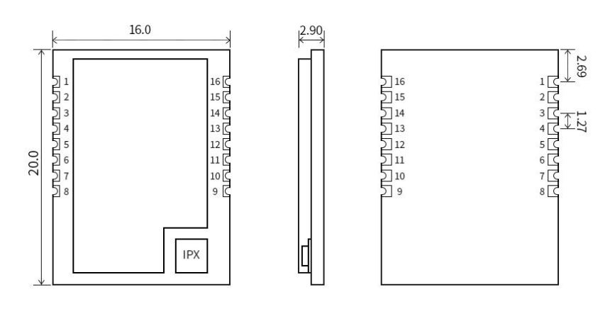
ESP32-S3-WROOM-1U (N8R2)
Come microcontrollore è stato scelto un ESP32-S3-WROOM-1U nella sua versione da 8MB di flash e 2MB di PSRAM. La dicitura 1U sta ad intendere che non è presente l'antenna sulla PCB del modulo, ma un connettore per antenna esterna. Sia questo modulo che il modulo LoRa presentano la stessa soluzione per antenna esterna per il semplice fatto che un body costruito in materiale composito, soprattutto fibra di carbonio, essendo conduttivo potrebbe totalmente o parzialmente bloccare le emissioni elettromagnetiche. L'antenna esterna permette un superiore guadagno essendo in linea d'aria con il ricevitore.
Sebbene la telemetria a lungo raggio sia affidata al modulo LoRa, l'antenna dell'ESP32-S3 sblocca le funzionalità radio native del chip con Wi-Fi 4 a 2.4 GHz e Bluetooth 5.0 Low Energy. Questa scelta architetturale apre a due scenari fondamentali per l'operatività in pista:
-
Scaricamento dati e OTA: Il Wi-Fi permette di scaricare i log pesanti ad alta velocità quando la vettura rientra ai box, o di eseguire aggiornamenti firmware OTA senza dover smontare la scocca per accedere fisicamente alla porta USB della centralina.
-
Diagnostica rapida: Il Bluetooth LE può essere utilizzato per connettere rapidamente un tablet o uno smartphone per visualizzare lo stato della vettura, gli errori o i valori dei sensori durante le fasi di ispezione o di setup pre gara.
Matrice GPIO e Flessibilità di Routing
Un fattore decisivo nella scelta della famiglia ESP32-S3 è l'avanzata matrice GPIO. A differenza dei microcontrollori tradizionali dove le periferiche hardware sono legate a pin fissi, l'ESP32-S3 permette di instradare quasi ogni segnale digitale (SPI, UART, I2C, PWM) su qualsiasi pin libero. Questa caratteristica ha semplificato drasticamente lo sbroglio (routing) del PCB: ha permesso di sbrogliare le piste del bus SPI verso la MicroSD e le linee di comunicazione verso il modulo LoRa in modo diretto e parallelo, riducendo al minimo l'uso di via passanti e migliorando l'integrità dei segnali.
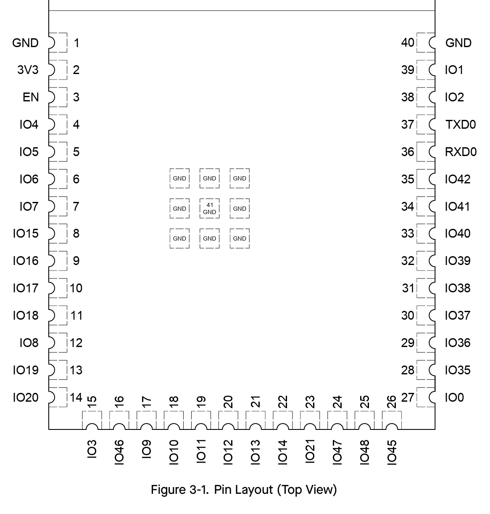
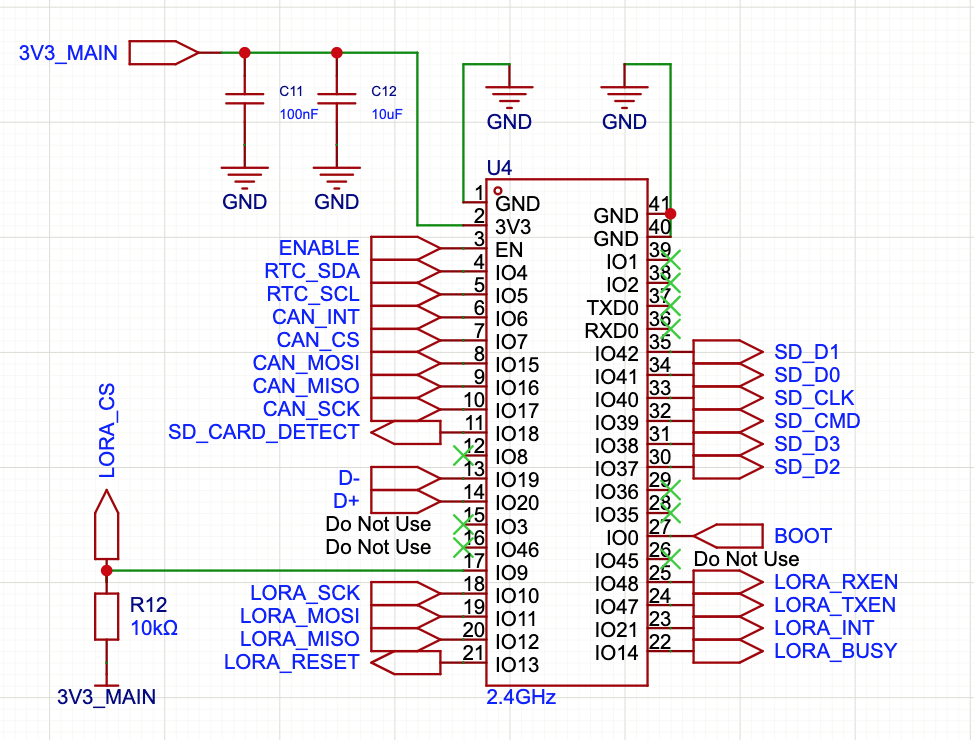
Le immagini sopra mostrano il layout fisico del modulo ESP32-S3 e la corrente configurazione di pinout scelta per ottimizzare lo sbroglio in fase di progettazione della PCB.
Consumi
A livello energetico, l'ESP32-S3 richiede una gestione termica adeguata implementata tramite pad termico e vie di dissipazione sul PCB. I consumi variano in base allo stato:
- Deep Sleep: ~7 µA
- Elaborazione attiva (Radio Off): ~20-30 mA
- Picco di trasmissione Wi-Fi: Fino a ~350 mA
Linee di comunicazione
Per mantenere le comunicazioni pulite tra il microcontrollore e le periferiche evitando di aggiungere complessità software per l'arbitraggio è stato deciso di utilizzare una linea diversa per ognuno:
- il modulo di comunicazione LoRa sulla SPI2
- il modulo SD può essere cablato sulla periferica SDMMC, specificatamente progettata per comunicare con le MicroSD
- il controller CAN va sulla SPI3
TCAN4550-Q CAN Controller
Il microcontrollore non supporta nativamente il CAN FD, per questo motivo non sarà necessario solo un transceiver, ma proprio un controller CAN esterno. La scelta è ricaduta su un TCAN4550-Q della Texas Instruments per via della sua elevata affidabilità e perché può essere utilizzato sia con oscillatore dedicato che con clock fornito dal microcontrollore (punto a favore che è certificato automotive). Ad ogni modo si è deciso di optare per un oscillatore esterno da 40Mhz perché è consigliato da datasheet per raggiungere la massima velocità.
L'utilizzo di questo componente implica una linea SPI dedicata.
Data l'enorme mole di messaggi da processare è opportuno utilizzare la FIFO del controllore per la lettura, evitando così di frammentare le operazioni di spostamento dei dati e l'elaborazione. Utilizzando questa tecnica si risparmiano anche risorse sulla linea SPI, perché non si effettuano molte operazioni, ma solo alcune transazioni con più dati al loro interno.
ADP3339 LDO Regulator
Il regolatore di tensione è una parte importantissima del progetto, perché mette insieme considerazioni riguardanti l'ambiente di funzionamento e le necessità degli altri componenti sulla scheda. In primo luogo bisogna considerare le emissioni EMI della scheda che monta non una ma ben due antenne ad alte prestazioni su frequenze diverse: l'ESP32 genera un segnale wifi e un segnale bluetooth che hanno il potenziale per generare dei disturbi indotti nelle piste del resto della scheda, aggiungendosi anche al disturbo emesso dall'inverter e dal chip LoRa. La scelta è ricaduta su un regolatore lineare LDO perché non aggiunge ulteriori disturbi alle alimentazioni rispetto ad un regolatore DC-DC switching e, con qualche accortezza, può non essere un problema dal punto di vista termico.
La corrente di picco del ADP3339 raggiunge 1.5A, il che lascia un margine comodo per l'alimentazione di ESP32, transceiver CAN e MicroSD. Inoltre l'architettura Low Dropout dell'ADP3339 garantisce la stabilizzazione a 3.3V anche se la tensione di ingresso a 5V dovesse subire fluttuazioni o cali dovuti a picchi di assorbimento su altre schede collegate allo stesso cablaggio della vettura, assicurando la continuità della telemetria in ogni condizione di gara.
Schematico e PCB
In un ambiente duro come quello della Formula Student ogni componente deve essere scelto e posizionato con cura per evitare una serie di problematiche note che possono essere:
- Disturbi elettromagnetici
- Vibrazioni
- Temperature
Nei prossimi capitoli verranno analizzati in dettaglio i blocchi logici che compongono lo schematico e la PCB, motivando le scelte di design.
Stack-Up e piani
Usando una struttura a 6 layer, il progetto fa un salto qualitativo necessario per supportare la presenza di un trasmettitore LoRa da 500mW massimi, un microcontrollore ad alta frequenza e un bus differenziale CAN. Lo stack-up scelto è stato pensato per massimizzare l'integrità dei segnali e abbattere le emissioni irradiate.
| No. | Name | Type |
|---|---|---|
| 1 | Top | Signal |
| 2 | GND | Plane Zone |
| 3 | Inner 2 | Signal |
| 4 | Inner 3 | Signal |
| 5 | 3V3_MAIN | Plane Zone |
| 6 | Bottom | Signal |
La scheda è stratificata secondo la seguente logica:
-
Layer 1 - Top (Signal): Dedicato ai componenti principali e al routing esclusivo dei segnali differenziali ad alta criticità. Instradare le piste
CANHeCANLrigorosamente su questo strato, in modo diretto e senza mai attraversare la scheda con dei via, evita discontinuità di impedenza e previene alterazioni di fase, garantendo la massima immunità ai disturbi esterni dell'inverter e delle antenne. -
Layer 2 - Inner 1 (GND Plane): Configurato come Plane Zone dedicata interamente alla massa. Avere un piano di massa continuo subito sotto i segnali ad alta velocità è fondamentale perché fornisce il percorso di ritorno più breve possibile per le correnti ad alta frequenza, abbassando le emissioni elettromagnetiche e proteggendo la scheda dai disturbi esterni dell'inverter. Inoltre agisce come un massiccio dissipatore termico per l'intera scheda.
-
Layer 3-4 - Inner 2-3: Entrambi i layer servono per semplificare lo sbroglio delle net e garantiscono anche una maggiore schermatura alle linee ad alta velocità che ci passano per via del fatto che sono imbottigliate in due piani continui di rame.
-
Layer 5 - Inner 4 (3V3_MAIN Plane): Questo layer interno è dedicato alla distribuzione della potenza a 3.3V. Utilizzare un intero piano per la potenza (invece di semplici piste) garantisce un'impedenza bassissima, permettendo all'ESP32 e alla MicroSD di assorbire picchi di corrente istantanei senza generare cali di tensione. Inoltre, l'accoppiamento capacitivo naturale che si crea tra questo piano e il piano di massa adiacente funge da enorme condensatore di disaccoppiamento distribuito, filtrando ulteriormente il rumore ad alta frequenza.
-
Layer 6 - Bottom (Signal): Utilizzato per i segnali secondari a bassa velocità e per completare il posizionamento dei componenti ingombranti o critici termicamente come il regolatore LDO. Instradare le piste trasversali su questo layer permette di evitare tagli sul layer Top, preservando la continuità del piano di massa interno.
Power stage
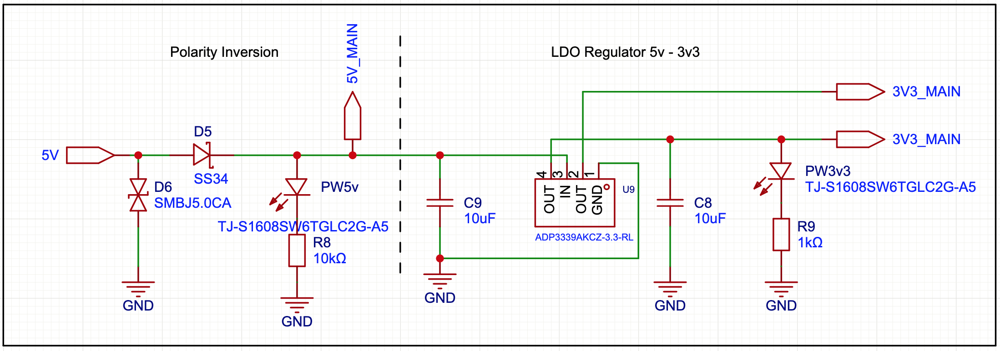
Il power stage è diviso in due blocchi concettuali, le protezioni per sovratensioni e inversioni di polarità e il regolatore LDO.
Analizzando il primo blocco si può notare che l'inversione di polarità è stata gestita attraverso il diodo schottky D5 che è stato dimensionato per sopportare la somma delle correnti dei singoli moduli, lasciando ovviamente un ampio margine. Non serve essere precisi con le correnti, conviene abbondare perché si rischierebbe di bruciare il diodo se si eccedono le sue specifiche, inoltre serve solo come protezione verso le inversioni di polarità, non è fatto per diventare un e-fuse.
Il secondo componente importante è il diodo TVS (Transient Voltage Suppressor) bidirezionale D6, che serve per sopprimere i transienti(picchi momentanei) di tensione indotti nell'alimentazione dai disturbi. Il TVS è dimensionato per rimanere inattivo alla tensione nominale, ma interviene rapidamente scaricando a massa i picchi prima che possano friggere il regolatore o, peggio, danneggiare il modulo LoRa (che ha un limite operativo massimo di 3.3V continuativi).
Nel secondo blocco è presente il regolatore che abbassa la tensione dai 5V ai 3V3. La peculiarità di questo regolatore è che la tensione fissa di uscita evita l'aggiunta del partitore di tensione tra l'uscita e il pin di regolazione. Il datasheet indica che per mantenere la tensione in uscita stabile è necessario mettere due condensatori da 1\(\mu F\) in ingresso e in uscita. In questo caso sono stati messi da 10 \(\mathrm{\mu F}\) perché in un ambiente rumoroso come il nostro è meglio non rischiare.
Gli ultimi componenti sono i LED di stato, che indicano l'accensione del power stage e dell'alimentazione principale.
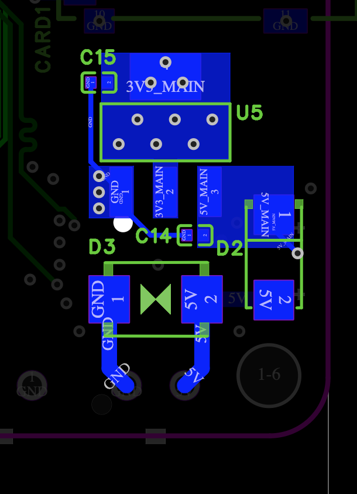
L'immagine sopra mostra il layout implementato per il regolatore. Tutto il power stage è stato posizionato sul layer inferiore della scheda per risparmiare spazio e per ottimizzare la dissipazione termica.
L'alimentazione a 5V arriva dal connettore nella parte inferiore e viene instradata attraverso piste da 0.8mm, passando prima attraverso i componenti D5 e D6 per le protezioni, per poi immettersi nei pin di ingresso del regolatore.
Gestione Termica e Piani di Rame
Poiché l'ADP3339 è un regolatore lineare, l'abbassamento di tensione da 5V a 3.3V comporta una dissipazione di energia sotto forma di calore, proporzionale alla corrente assorbita. Per smaltire questo carico termico senza l'ausilio di dissipatori meccanici esterni, il layout sfrutta attivamente i piani di rame del PCB. I pin di massa del regolatore e dei condensatori di filtro sono ancorati a un poligono di rame dedicato. Questo piano superficiale agisce da primo dissipatore, allontanando rapidamente il calore dal package del componente.
Via Termici e Transizioni di Potenza
Per massimizzare l'efficienza termica e garantire percorsi a bassissima impedenza per le correnti elevate, il layout fa un uso estensivo di via:
-
Via Termici: All'interno e in prossimità del piano di rame dell'LDO sono stati piazzati multipli via passanti collegati al piano di massa interno continuo. Questi via fungono da tubi termici, trasferendo il calore dal layer inferiore ai layer interni, permettendo all'intera massa della scheda di funzionare come un grande radiatore.
-
Via per Alte Correnti: Nelle zone in cui l'alimentazione deve necessariamente cambiare layer (ad esempio per portare i 3.3V all'ESP32), è stato evitato l'uso di un singolo via. Per gestire i picchi transitori, le transizioni avvengono tramite cluster di via multipli. Questa ridondanza abbassa la resistenza e l'induttanza parassita del collegamento, prevenendo surriscaldamenti localizzati e cadute di tensione sui rail di alimentazione che causerebbero riavvii improvvisi del microcontrollore.
Linea CAN
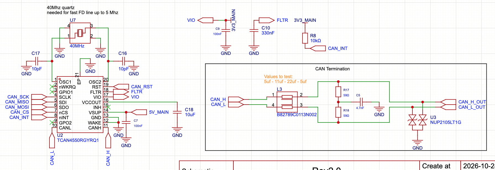
A protezione del controller contro i forti disturbi elettromagnetici dell'inverter, la linea fisica è stata equipaggiata con un array di diodi TVS U3 e un Common Mode Choke L3 con footprint standardizzato, permettendo di testare dinamicamente induttanze diverse.
Sulla linea 3V3 è stato anche inserito un condensatore di decoupling, che permette di assorbire sbalzi di corrente e alcuni disturbi. L'ultimo elemento importante per far funzionare la linea CAN sono le resistenze di terminazione da 120 ohm, che vengono inserite sulla linea differenziale.
Il componente più sensibile in questo design è indubbiamente il quarzo U7 che genera il clock a 40 MHz richiesto dal CAN FD. Ci sono due parametri che bisogna controllare per scegliere un quarzo ideale:
- La deriva di frequenza deve essere inferiore a 20ppm considerando anche la variazione di deriva nell'arco del tempo
- La capacità dei condensatori deve essere il doppio della capacità di carico contando anche una capacità parassita che va dai 2 pF ai 4 pF
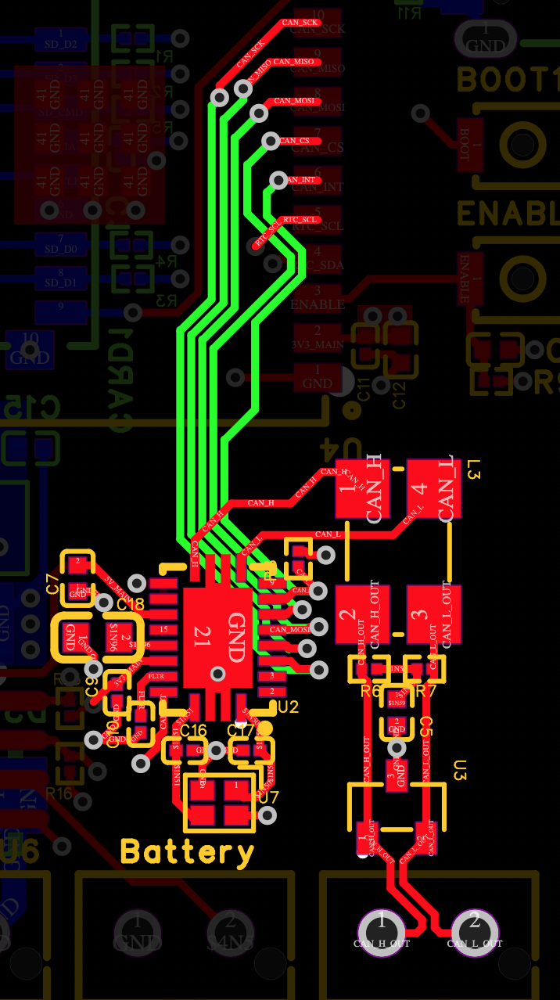
I segnali CAN_H e CAN_L sono segnali differenziali e, in quanto tali, sono stati instradati in modo parallelo e accoppiato per tutta la lunghezza della pista. Il segnale segue precisamente un ordine fisico che è il seguente: Connettore \(\rightarrow\) Diodo TVS \(\rightarrow\) Common Mode Choke \(\rightarrow\) Terminazione Split \(\rightarrow\) Transceiver.
Il filtro di modo comune è l'elemento più critico per sopravvivere al rumore dell'inverter. Spesso è impossibile calcolare l'induttanza perfetta, poiché la capacità parassita del cablaggio e dei diodi TVS può innescare circuiti LC risonanti che distorcono il segnale. Per mitigare questo rischio si è optato per una strategia flessibile: è stato previsto un footprint SMD standard 1210 per il Common Mode Choke. Questo permette di testare diversi valori di induttanza (es. 11 µH, 22 µH, 51 µH) o di sostituire il filtro con resistenze da 0 Ohm o jumper qualora si rilevasse una distorsione del segnale dovuta a un'induttanza eccessiva (come già successo su altre schede).
Dallo schematico si può anche notare l'utilizzo dello strato interno Inner 3 per lo sbroglio della linea SPI.
LoRa
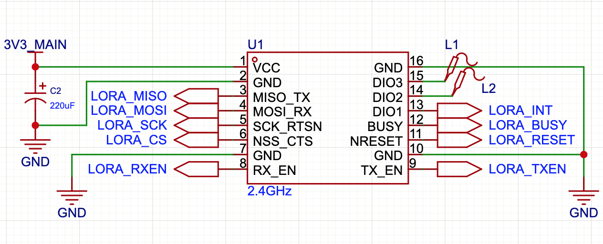
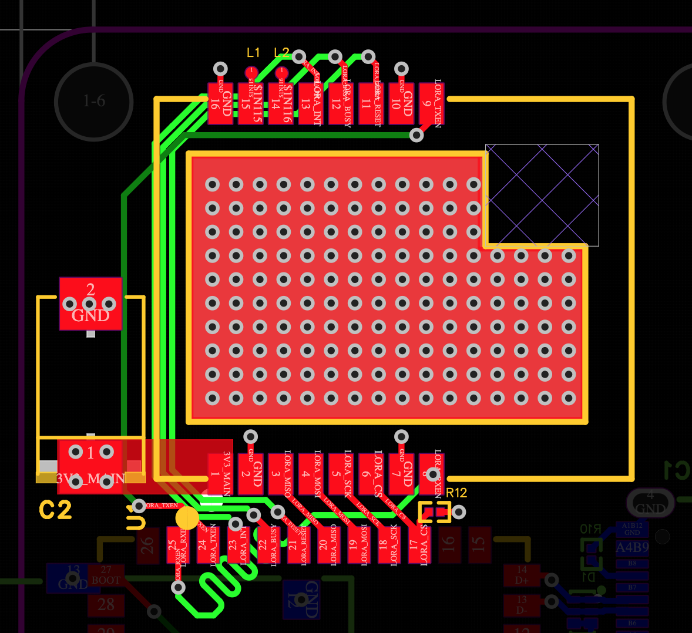
L'integrazione di un trasmettitore da 500mW max (E28-2G4M27SX) direttamente su un circuito compatto pone sfide severe in termini di integrità del segnale e immunità ai disturbi. Un segnale RF ad alta potenza può facilmente accoppiarsi con le piste vicine, corrompendo i dati del bus SPI o inducendo reset anomali nel microcontrollore. Per evitare questo scenario, il layout del modulo LoRa è stato progettato attorno a tre strategie chiave:
- Schermatura RF e Stitching: Il modulo integrato LoRa ha al di sopra una schermatura metallica che impedisce l'uscita di radiofrequenze se non dall'antenna. Per riprodurre un effetto simile, sotto il modulo è stato introdotto un piano continuo di rame sul primo layer, collegato al piano di massa da un array di via. Questa struttura crea una vera e propria gabbia di Faraday che intrappola al suo interno tutti i segnali che vengono generati dal modulo.
- Keepout zone: Direttamente sotto il connettore dell'antenna è stata instaurata una keepout zone, che impedisce il piazzamento di aree di rame, componenti e piste direttamente sotto la stessa. Se si inserisce un piano di rame, le onde elettromagnetiche si ripiegano direttamente verso GND, il che oltre a generare riflessioni rischia di indebolire il segnale.
- Power Delivery: il modulo LoRa è alimentato direttamente dal piano di rame a 3.3V. Tuttavia, trasmettere pacchetti a 500mW richiede picchi di assorbimento transitori molto rapidi, fino a 580mA. Per evitare che l'induttanza parassita delle piste rallentasse l'erogazione di corrente causando cali di tensione, il condensatore di bulk primario C2 è stato posizionato fisicamente a ridosso del pin VCC del modulo. Questo condensatore funge da riserva di energia locale, garantendo la massima potenza senza stressare il cablaggio generale. Il dimensionamento delle correnti è stato studiato nel caso peggiore, nell'effettivo utilizzo del modulo verranno utilizzate sicuramente potenze inferiori.
Le due piste a sinistra sono i due segnali LORA_TXEN e LORA_RXEN, che servono a settare la modalità dell'antenna in trasmissione e ricezione. Affinché questi comandi arrivino in modo perfettamente sincrono, è stata applicata la tecnica del length tuning (ricciolo a serpentina sulla pista sotto) per equalizzarne la lunghezza e annullare le differenze di tempo di propagazione. Infine, le connessioni nella parte inferiore costituiscono il bus SPI ad alta velocità, instradato in modo compatto e diretto per trasportare i comandi e i dati tra il modulo LoRa e il microcontrollore.
Microcontrollore
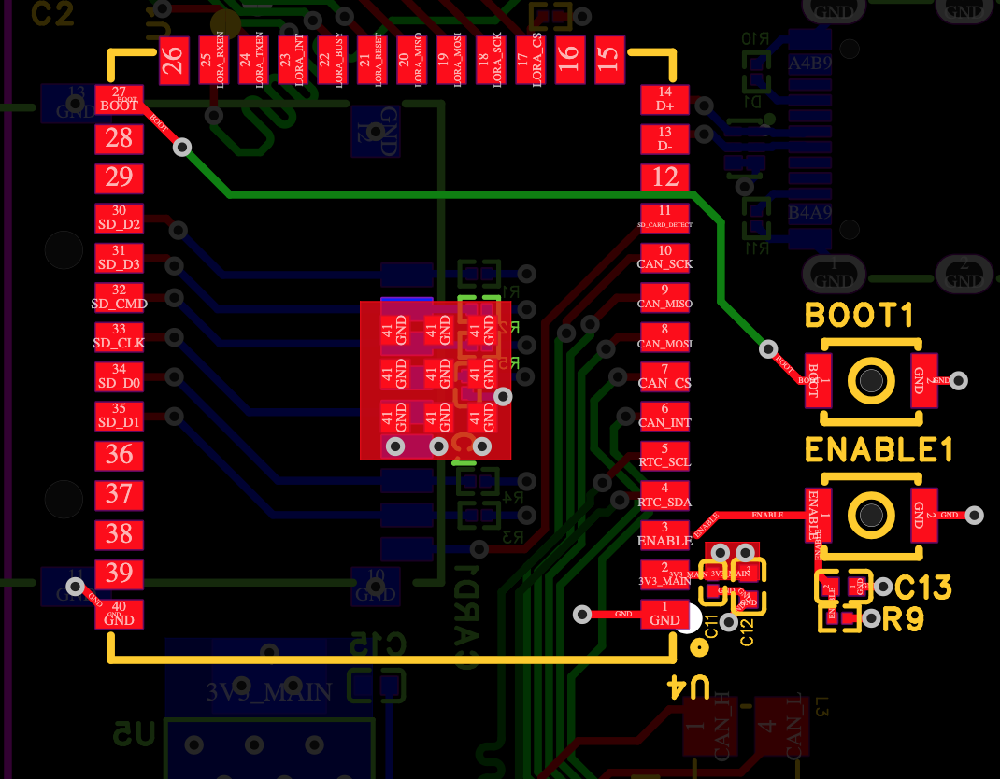
Al centro del footprint dell'ESP32 è ben visibile il grande pad termico esposto. Invece di affidare la dissipazione alla sola superficie del layer Top, il pad è stato ancorato al piano di massa interno tramite un array di 4 via passanti. Questa soluzione abbassa la resistenza termica del componente, trasferendo il calore generato durante le trasmissioni Wi-Fi o i calcoli intensivi agli strati interni, sfruttando l'intera massa di rame del PCB come radiatore.
Un elemento critico per l'affidabilità di qualsiasi microcontrollore è il power-on reset. Come visibile dallo sbroglio evidenziato in rosso, il pin ENABLE dell'ESP32 è controllato da una specifica rete RC, composta dalla resistenza di pull-up R1 e da un condensatore a massa. Questo circuito hardware ritarda l'accensione del microcontrollore di qualche millisecondo rispetto all'erogazione dell'alimentazione. In questo modo si garantisce che l'ESP32 inizi l'esecuzione del firmware solo quando il piano dei 3.3V è perfettamente stabilizzato, prevenendo crash, stati logici indefiniti o scritture corrotte sulla MicroSD all'avvio. Sono stati inoltre integrati due pulsanti tattili BOOT ed ENABLE per consentire il reset manuale e l'ingresso forzato in modalità bootloader per il flashing del firmware durante lo sviluppo del software.
Sui pin di alimentazione sul lato destro del chip, si notano i condensatori di decoupling. La loro vicinanza ai pin VCC non è casuale: serve a minimizzare l'induttanza parassita delle piste. Questi condensatori agiscono come serbatoi che forniscono energia istantanea alle porte logiche interne dell'ESP32 durante le rapide commutazioni, sopprimendo al contempo il rumore ad alta frequenza prima che possa inquinare il piano di alimentazione 3V3_MAIN.
MicroSD
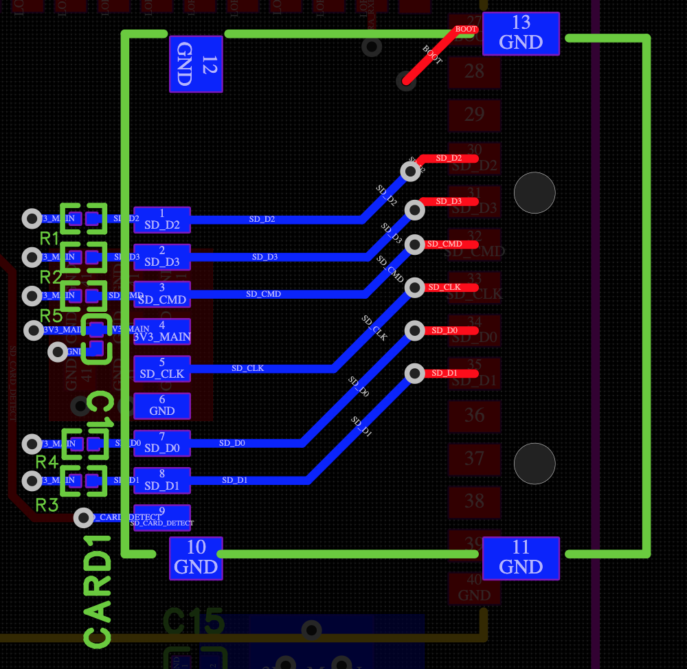
A livello meccanico, il socket per la MicroSD è stato collocato strategicamente lungo il perimetro esterno del PCB. Questa scelta non risponde solo a criteri di sbroglio, ma è una precisa esigenza di usabilità in pista: permette l'estrazione rapida della scheda senza dover smontare la centralina. In questo modo è possibile scaricare fisicamente i log della telemetria sul PC qualora lo scaricamento OTA tramite Wi-Fi non fosse utilizzabile.
RTC
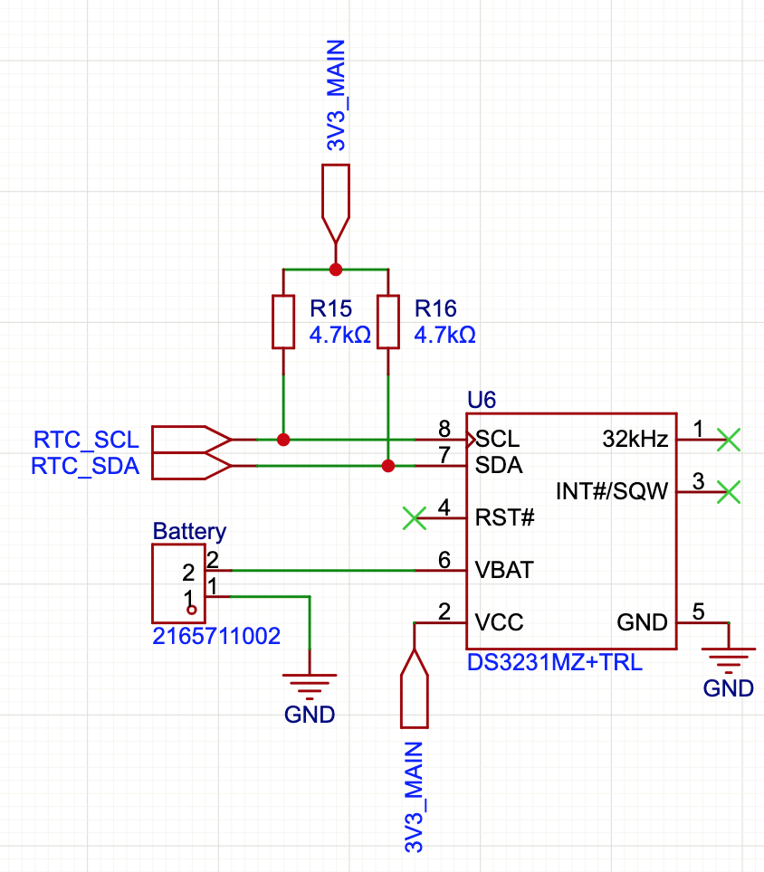
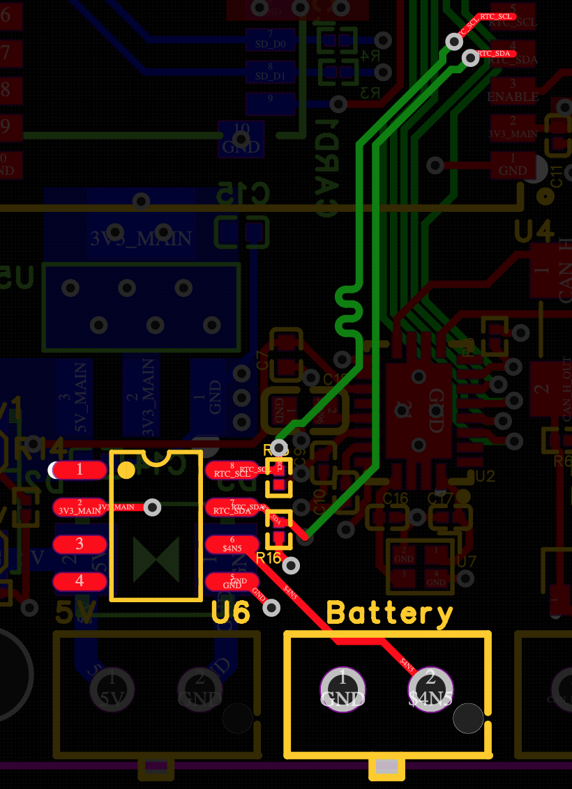
È stato deciso di inserire anche un real time clock per essere in grado di assegnare un timestamp ai pacchetti di telemetria. La particolarità è che si rende necessaria una batteria a bottone aggiuntiva per alimentarlo a macchina spenta
Algoritmo ADR
L'adozione del modulo E28-2G4M27SX permette di superare il limite della larghezza di banda. Per fare in modo di avere sempre il maggior data rate possibile in qualsiasi condizione, è possibile operare su tre parametri fondamentali della rete:
- Spreading Factor (SF)
- Bandwidth (BW)
- Modulazione
Normative
Le trasmissioni nella banda a 2,4 GHz non richiedono licenza, ma devono rispettare le regole europee sull'uso dello spettro. Queste regole fissano la potenza massima irradiata e il comportamento che il trasmettitore deve avere verso gli altri utenti della banda, e determinano quindi il punto di partenza di tutti i calcoli che seguono.
Quadro normativo
- Direttiva 2014/53/UE (RED, Radio Equipment Directive): stabilisce i requisiti essenziali che ogni apparato radio deve soddisfare per essere messo in servizio nell'Unione Europea.
- ETSI EN 300 328 V2.2.2 (2019-07), Wideband transmission systems; Data transmission equipment operating in the 2,4 GHz band; Harmonised Standard for access to radio spectrum: è la norma armonizzata per la trasmissione dati nella banda 2400–2483,5 MHz (clausola 1). Rispettarla dà presunzione di conformità ai requisiti della RED (allegato A), ed è quindi il riferimento tecnico del progetto.
La norma distingue tra apparati a salto di frequenza (FHSS) e apparati a frequenza fissa (non-FHSS, clausola 4.3.2). Il sistema descritto usa un canale fisso e rientra quindi nel secondo caso.
Potenza e densità spettrale
La potenza massima è definita come EIRP media durante la trasmissione (clausola 4.3.2.2.2), e il suo limite vale per qualsiasi combinazione di potenza e antenna:
The RF output power for non-FHSS equipment shall be equal to or less than 20 dBm.
NOTE: For Non-adaptive FHSS equipment, the manufacturer may have declared a reduced RF Output Power (see clause 5.4.1 m)) and associated Duty Cycle (see clause 5.4.1 e)) that will ensure that the equipment meets the requirement for the Medium Utilization (MU) factor further described in clause 4.3.2.5. This is verified by the conformance test referred to in clause 4.3.2.5.4.
For non-adaptive non-FHSS equipment, where the manufacturer has declared an RF output power of less than 20 dBm e.i.r.p., the RF output power shall be equal to or less than that declared value.
This limit shall apply for any combination of power level and intended antenna assembly.
Oltre alla potenza totale è limitata la densità spettrale di potenza, misurata su 1 MHz di banda (clausola 4.3.2.3):
The maximum Power Spectral Density for non-FHSS equipment is 10 dBm per MHz.
Sotto i 10 dBm EIRP il limite di densità spettrale è sempre rispettato, perché la potenza contenuta in 1 MHz non può superare la potenza totale.
Esenzione sotto 10 dBm EIRP
Sopra i 10 dBm EIRP la norma impone due alternative. L'apparato può essere non adattivo: in questo caso deve limitare la durata delle trasmissioni (clausola 4.3.2.4) e l'occupazione del canale, misurata dal fattore di utilizzo del mezzo MU = (P_out / 100 mW) × DC, che non deve superare il 10% (clausola 4.3.2.5). Oppure può essere adattivo: in questo caso deve verificare che il canale sia libero prima di trasmettere (Listen Before Talk, clausola 4.3.2.6.3) o rilevare ed evitare le altre trasmissioni (Detect and Avoid, clausola 4.3.2.6.2).
Questi requisiti non si applicano agli apparati che trasmettono sotto i 10 dBm EIRP:
[EN 300 328, clausola 4.3.2.4.1] These requirements apply to non-adaptive equipment or to adaptive equipment when operating in a non-adaptive mode. The equipment is non-FHSS equipment. These requirements do not apply for equipment with a declared RF Output power level of less than 10 dBm e.i.r.p. or for equipment when operating in a mode where the RF Output power is less than 10 dBm e.i.r.p.
[EN 300 328, clausola 4.3.2.5.1] This requirement does not apply to adaptive non-FHSS equipment unless operating in a non-adaptive mode. In addition, this requirement does not apply for non-FHSS equipment with a maximum declared RF Output power level of less than 10 dBm e.i.r.p. or for non-FHSS equipment when operating in a mode where the RF Output power is less than 10 dBm e.i.r.p.
NOTE: Although this requirement does not apply to non-FHSS equipment with an RF Output power level of less than 10 dBm e.i.r.p. the actual value the Medium Utilization factor even for equipment operating at an RF Output power level of less than 10 dBm may be used elsewhere in the present document e.g. for defining the applicable receiver category in clause 4.2.3.2.
[EN 300 328, clausola 4.3.2.6.1] This requirement does not apply to non-adaptive non-FHSS equipment or adaptive non-FHSS equipment operating in a non-adaptive mode.
In addition, this requirement does not apply for non-FHSS equipment with a maximum declared RF Output power level of less than 10 dBm e.i.r.p. or for non-FHSS equipment when operating in a mode where the RF Output power is less than 10 dBm e.i.r.p.
Adaptive non-FHSS equipment uses a mechanism by which it can adapt to its radio environment by identifying other transmissions present within its Occupied Channel Bandwidth.
Adaptive non-FHSS equipment shall implement either of the mechanisms provided in clause 4.3.2.6.2 or clause 4.3.2.6.3.
Adaptive non-FHSS equipment is allowed to switch dynamically between different adaptive modes.
Un apparato sotto questa soglia può quindi trasmettere in modo continuo, su canale fisso e senza LBT. La soglia è strettamente minore di 10 dBm: l'EIRP di progetto viene fissata a 9 dBm, lasciando 1 dB di margine per le tolleranze del modulo. Le ipotesi formulate per la potenza di trasmissioni devono essere verificate a banco con dei test specifici.
Lo stesso livello di potenza determina la categoria del ricevitore: un apparato con EIRP massima tra 0 e 10 dBm appartiene alla categoria 2 (clausola 4.2.3.2.2, pag. 16), per la quale la norma fissa i requisiti di resistenza ai segnali forti fuori canale (receiver blocking, clausola 4.3.2.11).
Opzioni valutate
| Opzione | EIRP | Requisiti (EN 300 328) | Valutazione |
|---|---|---|---|
| A. Canale fisso, sotto 10 dBm | < 10 dBm | Esente da duty cycle, MU e adattività (4.3.2.4.1, 4.3.2.5.1, 4.3.2.6.1) | Scelta: la più semplice, margini ancora ampi |
| B. Canale fisso, non adattivo | 10–20 dBm | Tx-sequence ≤ 10 ms, Tx-gap ≥ Tx-sequence (minimo 3,5 ms) (4.3.2.4.3); MU ≤ 10% (4.3.2.5.3) | A 20 dBm il duty cycle massimo è del 10%: incompatibile con la telemetria |
| C. Canale fisso, LBT | 10–20 dBm | Verifica del canale prima di ogni trasmissione, durata delle trasmissioni limitata (4.3.2.6.3) | Guadagno di potenza, ma con il Wi-Fi in pista il canale risulterebbe spesso occupato |
| D. FHSS adattivo | fino a 20 dBm | ≥ 15 frequenze su ≥ 70% della banda, tempo per frequenza limitato, LBT a ogni salto (4.3.1) | +11 dB e diversità contro il Wi-Fi, ma sincronizzazione, ADR e fallback molto più complessi |
L'obiettivo è avere un sistema utilizzabile nella stagione corrente, quindi il tempo di sviluppo hardware e software pesa sulla scelta. Un FHSS adattivo con LBT richiederebbe almeno due mesi aggiuntivi di sviluppo e test. Per la prima versione si adotta quindi l'opzione A, con EIRP di 9 dBm, canale fisso e nessun LBT, e tutti i calcoli seguenti fanno riferimento a questo valore. Il passaggio all'opzione D resta un possibile sviluppo futuro, con un guadagno fino a 11 dB sul link budget.
Conseguenze sull'hardware
Con un'antenna da 5 dBi e 1 dB di perdita nel cavo, un'EIRP di 9 dBm corrisponde a 5 dBm in uscita dal modulo. Il modulo E28-2G4M27SX integra però un amplificatore da circa 27 dB dopo l'SX1280, la cui potenza minima programmabile è −18 dBm: la potenza minima in uscita dal modulo risulta quindi vicina ai 9 dBm. Per rispettare il limite va misurata la potenza effettiva al minimo e, se necessario, va inserito un attenuatore sulla linea d'antenna o usata un'antenna con guadagno inferiore. (È anche possibile considerare perdite ulteriori per un connettore aggiuntivo nel caso in cui venga deciso di utilizzare un packaging metallico)
Parametri fondamentali
È necessario acquisire due metriche fondamentali: il Margine di Link (LM) e il Packet Error Rate (PER).
Il mattone base per la scelta del modem e per la transizione tra le diverse modulazioni è la comprensione della distanza tra le prestazioni hardware e il limite teorico della fisica delle telecomunicazioni. In particolare il teorema di Shannon descrive la capacità teorica di canale mettendo in relazione SNR (Signal to Noise Ratio) e larghezza di banda.
Guardando il datasheet del chip all'interno del modulo si ottiene questa relazione:
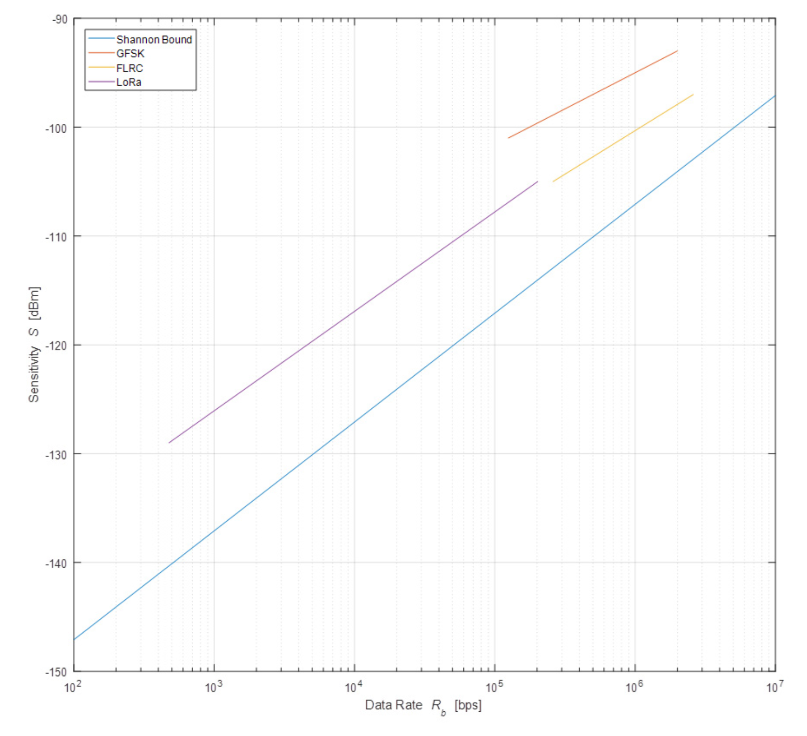
Nel grafico, la linea blu rappresenta il limite di Shannon, ovvero la sensibilità teorica minima assoluta per una comunicazione priva di errori a un dato bit rate. Le altre curve rappresentano le performance hardware reali dei modem integrati. Come si evince, la modulazione LoRa, grazie alle tecniche Spread Spectrum, si avvicina maggiormente al limite teorico rispetto al GFSK convenzionale, garantendo una superiore tolleranza al rumore e permettendo la demodulazione di segnali con SNR fortemente negativi fino a -20 dB.
Tuttavia, nella vita reale, il rumore non è costante. I transienti elettromagnetici ad alta frequenza, generati dall'inverter e lo shadowing causato dagli ostacoli, abbattono repentinamente l'SNR. Per non rischiare disconnessioni, l'algoritmo ADR non si spinge mai fino al limite teorico consentito dalla modulazione, ma calcola un margine di link. Questo cuscinetto di sicurezza garantisce che, anche in caso di un forte picco di rumore EMI condotto, il collegamento rimanga robusto e il packet error rate contenuto.
Link budget e distanze
title: Unità di misura
collapse: open
Tutte le unità di misura sono dB, dBi o dBm, quindi per calcolare le potenze basta solo sommare
Prima di parlare di ADR bisogna capire dove sta davvero il limite del link su un circuito di Formula Student, partendo dall'equazione fondamentale della potenza del segnale che arriva al ricevitore:
dove \(P_{tx}\) è la potenza in uscita dal modulo, \(G\) i guadagni d'antenna in dBi, \(L\) le perdite di cavi e connettori e \(PL(d)\) l'attenuazione del percorso alla distanza \(d\).
Le normative europee utilizzano la dicitura EIRP per definire i massimi livelli di potenza irradiata dall'antenna trasmittente. Utilizzando un'antenna con guadagno di 5 dBi e una prolunga coassiale con perdita stimata di 1dB, il modulo può trasmettere alla potenza massima di 5 dBm, come dimostrato dalla seguente equazione
Attenuazione in spazio libero
Ogni segnale elettromagnetico subisce un'attenuazione quando attraversa l'aria, questa dipende dalla distanza che la trasmissione percorre prima di raggiungere la ricevente.
| Distanza | PL spazio libero | \(P_{rx}\) |
|---|---|---|
| 50 m | 74,2 dB | −61,2 dBm |
| 100 m | 80,2 dB | −67,2 dBm |
| 200 m | 86,2 dB | −73,2 dBm |
| 500 m | 94,2 dB | −81,2 dBm |
| 1000 m | 100,2 dB | −87,2 dBm |
La tabella dice che, in spazio aperto, anche le modulazioni più veloci hanno un ampio margine, dimostrando che ci devono essere altri fattori che abbattono la potenza del segnale. Le potenziali cause da analizzare sono:
- Shadowing: causato da carrozzeria, pilota, persone, altre vetture, o muretti. È l’attenuazione dovuta a un ostacolo sul percorso e varia lentamente
- Fading veloce da cammini multipli.
- Aumento del rumore al ricevitore: causato principalmente da altre tecnologie che operano alla stessa banda di frequenze (come può essere il Wi-Fi) e dai disturbi del nostro inverter.
L’ADR insegue solo le variazioni lente con l'obiettivo di mitigarle; quelle veloci le assorbono il FEC e la tolleranza a qualche pacchetto perso.
Modello di shadowing
Lo shadowing si modella come una variabile log-normale, cioè gaussiana in dB, con media nulla e deviazione standard \(\sigma_{SF}\). I valori si ricavano dal modello di canale 3GPP TR 38.901 [1], scenario UMi – Street Canyon: è il più vicino a un circuito, con trasmettitore e ricevitore bassi e ostacoli come muretti, box e tribune.
| Condizione | \(\sigma_{SF}\) | Distanza di decorrelazione \(d_{corr}\) |
|---|---|---|
| In visibilità (LOS) | 4 dB | 10 m |
| Senza visibilità (NLOS) | 7,82 dB | 13 m |
Fonte: 3GPP TR 38.901, Tabella 7.4.1-1 (\(\sigma_{SF}\)) e Tabella 7.5-6 (\(d_{corr}\)).
Si usa il caso LOS come riferimento, perché la ground station è di norma in vista della vettura, e il caso NLOS come caso peggiore nel simulatore. Il 3GPP ricava questi valori da misure in ambiente urbano con stazioni base alte almeno 10 m. In pista le antenne sono a circa 1 m da terra, quindi i valori restano un'ipotesi di partenza da verificare con le misure.
Lo shadowing non cambia in modo indipendente da un punto all'altro: due posizioni vicine vedono gli stessi ostacoli. Il modello di Gudmundson [2] descrive questa correlazione con un esponenziale decrescente della distanza:
Nel simulatore lo shadowing si genera quindi come un processo autoregressivo del primo ordine, AR(1): a ogni passo il valore precedente viene attenuato del fattore \(\rho\) e si somma una componente casuale indipendente:
La varianza di \(W_k\) è scelta in modo che la deviazione standard complessiva resti \(\sigma_{SF}\) qualunque sia la distanza percorsa tra due passi. A 70 km/h la vettura percorre 10 m in circa 0,5 s: è questo il ritmo con cui lo shadowing cambia in modo significativo.
correlation = exp(-distance_moved_m / decorrelation_distance)
noise_std = std_dev_db * sqrt(1 - correlation**2)
# Generate the independent random component W ~ N(0, noise_std^2)
w = np.random.normal(0, noise_std)
current_shadowing = (correlation * current_shadowing) + w
Fading veloce
Il fading veloce si ha in assenza di visibilità diretta con la ricevente e segue la distribuzione di Rayleigh.
Nel caso peggiore: l'1% del tempo sotto la media di 20 dB, il 10% sotto di 10 dB. Questi buchi durano frazioni di lunghezza d'onda (12 cm a 2,4 GHz), cioè millisecondi a 70 km/h: l'ADR è troppo lento per inseguirli. Li assorbono la correzione d'errore, la ripetizione e la tolleranza a qualche pacchetto perso. L'ADR deve seguire solo le variazioni lente: shadowing e rumore.
Rumore e sensibilità
Il link budget dice quanta potenza arriva al ricevitore, ma non basta a capire se un pacchetto verrà ricevuto correttamente. Un ricevitore non riconosce un segnale dalla sua potenza assoluta, ma da quanto emerge dal rumore che lo accompagna. Lo stesso segnale a −90 dBm può arrivare senza errori in un canale pulito e perdersi del tutto vicino a un access point Wi-Fi o a un inverter sotto carico.
Servono quindi due grandezze: il rumore all'ingresso del ricevitore e il rapporto segnale/rumore minimo che ogni modulazione richiede per demodulare. Sommandole si ottiene la sensibilità, cioè la potenza minima che deve arrivare per ricevere correttamente il 99% dei pacchetti. La differenza tra la potenza ricevuta e la sensibilità è il margine di link, il numero su cui si basa tutto l'algoritmo ADR.
Questa analisi mostra anche perché l'ADR è necessario. Ogni modo più veloce occupa più banda o richiede più SNR, quindi ha bisogno di più potenza in ingresso. Nessun modo è insieme il più veloce e il più robusto: bisogna scegliere di volta in volta in base al margine disponibile.
Partiamo dal rumore termico, che non si può eliminare e definisce il punto di partenza per calcolare sensibilità e margine. Dipende dalla banda del ricevitore:
dove −174 dBm/Hz è la densità di rumore termico a temperatura ambiente, B è la banda in Hz e NF è la cifra di rumore (Noise Figure), cioè il rumore aggiunto dal ricevitore stesso. Il datasheet non la dichiara, ma si ricava dalla sensibilità: a SF12/203 kHz la sensibilità è −130 dBm e l'SNR richiesto è −20 dB (vedi più avanti), quindi
(circa 9 dB in modalità ad alta sensibilità). Da questa relazione segue che, a parità di SNR richiesto, raddoppiare la banda peggiora la sensibilità di circa 3 dB.
| Modo | B | \(-174 + 10\log_{10}B\) | \(N_{th}\) con NF = 11 dB |
|---|---|---|---|
| FLRC 0,3 MHz | 300 kHz | −119,2 dBm | −108,2 dBm |
| LoRa 406 kHz | 406 kHz | −117,9 dBm | −106,9 dBm |
| FLRC 0,6 MHz | 600 kHz | −116,2 dBm | −105,2 dBm |
| LoRa 812 kHz | 812 kHz | −114,9 dBm | −103,9 dBm |
| FLRC 1,2 MHz | 1,2 MHz | −113,2 dBm | −102,2 dBm |
| LoRa 1625 kHz | 1,625 MHz | −111,9 dBm | −100,9 dBm |
| FSK 2,4 MHz | 2,4 MHz | −110,2 dBm | −99,2 dBm |
Le sensibilità del datasheet sono misurate con solo questo rumore: tutto quello che si aggiunge in pista, che chiameremo \(\Delta N\), va sottratto al margine. La scheda lo misurerà in esercizio.
Rumore aggiuntivo
Oltre al rumore termico, in pista ci sono due sorgenti di disturbo, che pesano su lati diversi del collegamento:
- il Wi-Fi delle altre squadre e del paddock, che disturba soprattutto il ricevitore a terra;
- l'inverter della vettura, che disturba il ricevitore a bordo.
Wi-Fi. Il Wi-Fi occupa la stessa banda a 2,4 GHz, ma a differenza del rumore termico e di quello dell'inverter, non alza il rumore in modo continuo: trasmette a raffiche, e un pacchetto che si sovrappone a una raffica sullo stesso canale viene perso indipendentemente dal margine di link. L'effetto è quindi un aumento del PER, non una riduzione del margine, e per questo non rientra in ΔN. Dipende dagli apparati presenti, dal canale usato e dal traffico, ed è difficile da prevedere: non viene modellato in questa analisi né nel simulatore. Le contromisure sono scegliere un canale lontano dai canali Wi-Fi in uso, sfruttando la scansione con GetRssiInst all'avvio, e misurarne l'effetto reale in pista.
Inverter. L'inverter commuta i transistor del ponte trifase a 8 kHz. I fronti di commutazione sono molto ripidi e generano disturbi a banda larga, che arrivano al ricevitore a 2,4 GHz sia per irraggiamento sia attraverso l'alimentazione e la massa della scheda. Quanta parte di questo disturbo cada effettivamente nella banda del ricevitore non è noto finché non si misura, quindi si usa un modello fenomenologico: l'inverter alza il rumore del ricevitore di bordo di una quantità \(\Delta N_{inv}\), al massimo \(\Delta N_{max}\) (ipotesi: 15 dB).
L'aumento non è costante, ma dipende da due fattori:
- il battimento tra i due inverter: commutano a frequenze leggermente diverse e la differenza \(f_{env} \approx 15\) Hz fa sommare i loro disturbi alternativamente in fase e in controfase;
- la potenza erogata dai motori, rappresentata dalla posizione del pedale \(p(t)\), tra 0 e 1, approssimata con una sinusoide di frequenza \(f_p = 0{,}65\) Hz.
dove \(B(t)\) è l'inviluppo del battimento. Il modello è volutamente semplice: in controfase azzera il disturbo, mentre nella realtà resterebbe almeno quello di un singolo inverter. \(\Delta N_{max}\), \(f_{env}\) e la dipendenza dalla coppia sono ipotesi, da sostituire con le misure in vettura.
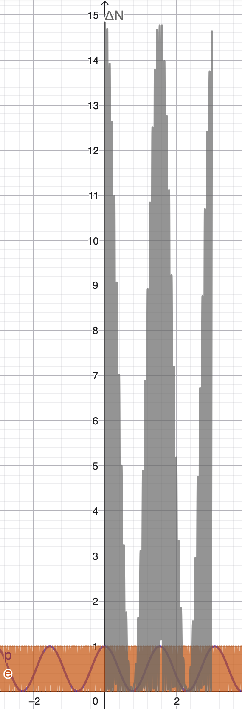
Il disturbo oscilla a 15 Hz, troppo velocemente perché l'ADR possa inseguirlo. Per questo non si usa il valore istantaneo di ΔN ma un valore alto su una finestra di tempo (per esempio il 90° percentile), che entra nella sensibilità effettiva:
SNR richiesto per modo
Il datasheet fornisce le sensibilità di tutti i modi, ma l'SNR richiesto solo per il LoRa. Per avere un valore omogeneo per tutta la scala, l'SNR richiesto si ricava dalla sensibilità e dal rumore termico calcolato con NF = 11 dB:
| # | Modo | B | \(N_{th}\) [dBm] | S [dBm] | \(\mathrm{SNR}_{req}\) ricavato | \(\mathrm{SNR}_{req}\) datasheet |
|---|---|---|---|---|---|---|
| 1 | LoRa SF12/406 | 406 kHz | −106,9 | −128 | −21,1 dB | −20 dB |
| 2 | LoRa SF11/812 | 812 kHz | −103,9 | −123 | −19,1 dB | −17,5 dB |
| 3 | LoRa SF9/812 | 812 kHz | −103,9 | −117 | −13,1 dB | −12,5 dB |
| 4 | LoRa SF7/812 | 812 kHz | −103,9 | −112 | −8,1 dB | −7,5 dB |
| 5 | FLRC 0,325 CR 3/4 | 0,3 MHz | −108,2 | −106 | +2,2 dB | — |
| 6 | FLRC 0,65 CR 3/4 | 0,6 MHz | −105,2 | −103 | +2,2 dB | — |
| 7 | FLRC 1,3 CR 3/4 | 1,2 MHz | −102,2 | −100 | +2,2 dB | — |
| 8 | FLRC 1,3 CR 1 | 1,2 MHz | −102,2 | −96 | +6,2 dB | — |
| 9 | FSK 2,0 | 2,4 MHz | −99,2 | −83 | +16,2 dB | — |
Per il LoRa i valori ricavati differiscono da quelli del datasheet di 0,6–1,6 dB. Le sensibilità sono arrotondate al dB e la cifra di rumore non è esattamente costante al variare della banda: ricalcolata modo per modo, sta tra 9,4 e 10,9 dB. Come riferimento si usa quindi la sensibilità del datasheet, e l'SNR ricavato serve solo a confrontare i modi tra loro e a tenere conto del rumore aggiuntivo.
La tabella mostra il compromesso alla base della scala: il LoRa demodula con segnale anche 21 dB sotto il rumore grazie allo spreading, l'FLRC lavora poco sopra il rumore grazie alla codifica, e l'FSK, senza codifica e con la banda più larga, ha bisogno di un segnale 16 dB sopra il rumore.
L'SNR richiesto serve anche a misurare il margine in esercizio, in due modi diversi a seconda del modem:
- LoRa: il ricevitore stima l'SNR di ogni pacchetto (
GetPacketStatus), quindi \(LM = \mathrm{SNR}_{mis} - \mathrm{SNR}_{req}\). Questa misura include già il rumore aggiuntivo \(\Delta N\). - FLRC e FSK: il ricevitore fornisce solo l'RSSI, quindi \(LM = \mathrm{RSSI} - S - \Delta N\), con \(\Delta N\) stimato misurando il rumore con
GetRssiInsttra un pacchetto e l'altro e sottraendo \(N_{th}\).
Sensibilità e margine
La sensibilità \(S\) è la minima potenza ricevuta con cui il ricevitore demodula i pacchetti con un PER dell'1%. Dipende dal rumore e dal rapporto segnale/rumore minimo richiesto dal modo:
La distanza tra la potenza ricevuta e la sensibilità è il margine di link:
Un margine positivo indica che il pacchetto viene ricevuto, ma nel modello \(P_{rx}\) è un valore medio: lo shadowing e il fading lo fanno oscillare di diversi dB. Per questo si fissa un margine minimo \(LM_{min} = 6\ \mathrm{dB}\), sotto il quale il modo corrente non è più considerato affidabile. Con lo shadowing a \(\sigma = 4\) dB, 6 dB corrispondono a circa \(1{,}5\sigma\) e coprono circa il 93% delle variazioni lente. Il fading veloce non è coperto dal margine e viene gestito tramite il PER e l'isteresi.
| Distanza | PL spazio libero | \(P_{rx}\) | LM FLRC 1,3 CR1 (−96 dBm) | LM LoRa SF7/812 (−112 dBm) | LM FSK 2,0 (−83 dBm) |
|---|---|---|---|---|---|
| 50 m | 74,2 dB | −61,2 dBm | 34,8 dB | 50,8 dB | 21,8 dB |
| 100 m | 80,2 dB | −67,2 dBm | 28,8 dB | 44,8 dB | 15,8 dB |
| 200 m | 86,2 dB | −73,2 dBm | 22,8 dB | 38,8 dB | 9,8 dB |
| 500 m | 94,2 dB | −81,2 dBm | 14,8 dB | 30,8 dB | 1,8 dB |
| 1000 m | 100,2 dB | −87,2 dBm | 8,8 dB | 24,8 dB | −4,2 dB |
Ipotesi: EIRP 9 dBm, antenna della ground station 5 dBi, 1 dB di cavo (\(P_{rx} = 13 - PL\)). Sensibilità del datasheet, senza \(\Delta N\), shadowing e fading.
In spazio libero l'FSK scende sotto il margine minimo già oltre i 310 m circa, l'FLRC regge fino a circa 1,4 km e il LoRa SF7 ha margine abbondante a qualsiasi distanza del circuito. I valori sono ottimistici: il rumore aggiuntivo \(\Delta N\) riduce ogni margine della stessa quantità.
Le sensibilità del datasheet sono misurate con pacchetti più corti di quelli trasmessi dalla scheda. A parità di SNR un pacchetto più lungo ha più probabilità di contenere un errore, quindi il PER sale. Si stima che servano 1–2 dB di segnale in più, e questa perdita viene compresa nel margine minimo.
Packet Error Rate (PER)
Il margine di link misura la potenza media del segnale, ma non vede le perdite dovute a eventi brevi come il fading veloce o le raffiche del Wi-Fi: in questi casi i pacchetti vengono persi anche con un margine ampio. Per questo l'ADR usa una seconda metrica, il Packet Error Rate, calcolato sugli ultimi \(N\) pacchetti attesi:
I pacchetti persi si ricavano dal numero di sequenza contenuto nell'header: ogni salto nella numerazione corrisponde a pacchetti non ricevuti. La finestra deve essere abbastanza lunga da non reagire al singolo pacchetto perso: con \(N = 100\) e una soglia del 5% servono almeno 5 pacchetti persi per superarla.
La soglia è fissata a \(\mathrm{PER}_{max} = 5\%\): è più alta dell'1% con cui il datasheet definisce la sensibilità, perché la telemetria tollera qualche perdita, ed è un valore da verificare durante i test.
Il PER va letto insieme al margine:
| Margine | PER | Causa probabile | Azione |
|---|---|---|---|
| sopra \(LM_{min}\) | sotto 5% | collegamento buono | nessuna, o si sale di gradino |
| sotto \(LM_{min}\) | qualsiasi | segnale debole | si scende di gradino |
| sopra \(LM_{min}\) | sopra 5% | fading veloce o interferenza (Wi-Fi) | non si scende: un modo più lento allunga il pacchetto in aria e aumenta le collisioni |
Cambi di modulazione e spreading factor
I cambi che l'ADR deve effettuare non sono mai repentini, ma dei gradini più morbidi che permettano di non portare troppo in basso il margine di link. Per ricavare quale siano questi salti dobbiamo partire dalla modulazione più robusta e basilare: LoRa. Partiamo da LoRa perché possiede la maggiore immunità al rumore e permette la ricezione corretta dei pacchetti anche con un SNR fortemente negativo.
All'interno della modulazione si può agire sulla regolazione dello spreading factor, che indica quanti bit trasporta ogni simbolo: un simbolo con SF bit è formato da \(2^{SF}\) chip, quindi ogni SF in più raddoppia la durata del simbolo, abbassa la velocità e migliora la sensibilità di circa 2,5–3 dB. Uno spreading factor più basso permette di modulare il messaggio più rapidamente, sbloccando quindi velocità di trasmissione superiori. Normalmente LoRa possiede solo 6 livelli di SF (da SF7 a SF12), ma noi con questo modulo possiamo partire da SF5 o SF6.
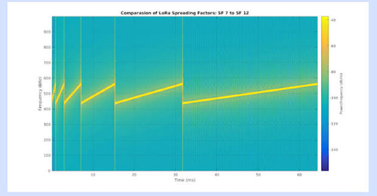
La seguente tabella mostra la sensibilità in relazione a larghezza di banda e spreading factor
| Bandwidth [kHz] | SF5 [dBm] | SF6 [dBm] | SF7 [dBm] | SF8 [dBm] | SF9 [dBm] | SF10 [dBm] | SF11 [dBm] | SF12 [dBm] |
|---|---|---|---|---|---|---|---|---|
| 203 | -109 | -111 | -115 | -118 | -121 | -124 | -127 | -130 |
| 406 | -107 | -110 | -113 | -116 | -119 | -122 | -125 | 🟢-128 |
| 812 | -105 | -108 | 🟢-112 | -115 | 🟢-117 | -120 | 🟢-123 | -126 |
| 1625 | -99 | -103 | -106 | -109 | -111 | -114 | -117 | -120 |
Mentre questa mostra il datarate
| Bandwidth [kHz] | SF5 [kb/s] | SF6 [kb/s] | SF7 [kb/s] | SF8 [kb/s] | SF9 [kb/s] | SF10 [kb/s] | SF11 [kb/s] | SF12 [kb/s] |
|---|---|---|---|---|---|---|---|---|
| 203 | 31.72 | 19.03 | 11.10 | 6.34 | 3.57 | 1.98 | 1.09 | 0.595 |
| 406 | 63.44 | 38.06 | 22.20 | 12.69 | 7.14 | 3.96 | 2.18 | 🟢1.190 |
| 812 | 126.88 | 76.13 | 🟢44.41 | 25.38 | 🟢14.27 | 7.93 | 🟢4.36 | 2.380 |
| 1625 | 253.91 | 152.34 | 88.87 | 50.78 | 28.56 | 15.87 | 8.73 | 4.760 |
Le celle evidenziate contengono la combinazione di SF e Bandwidth scelte per i cambi di modulazione. Quelle con SF11 e SF12 sono da utilizzare in caso di emergenza, cioè se la trasmissione è molto disturbata o molto distante.
Naturalmente la modulazione LoRa ha il limite teorico di 253.91kb/s, per poter scalare abbiamo bisogno delle altre due modulazioni: FLRC e FSK.
FLRC
FLRC è una modulazione proprietaria della Semtech progettata per operare esclusivamente sulla banda a 2.4 GHz. È un ibrido ingegneristico che cerca di unire la velocità pura di una modulazione tradizionale (GMSK/FSK) con l'immunità ai disturbi tipica dei protocolli a lungo raggio. Per configurare l'FLRC, il comando SetModulationParam() del chip richiede la definizione di tre parametri principali: Raw Data Rate e Bandwidth, Coding Rate (CR) e Prodotto Banda-Tempo (BT) per il filtro Gaussiano.
A differenza del LoRa, dove si imposta esplicitamente SF e bandwidth per ottenere una velocità risultante, in FLRC si seleziona una combinazione fissa e supportata di data rate grezzo e larghezza di banda.
| Symbol | Raw Programmed Data Rate Rb [Mb/s] |
Programmed Coding Rate CR | Effective Data Rate Rbeff [Mb/s] |
Sensitivity [dBm] at PER 1% |
|---|---|---|---|---|
| 🟢FLRC_BR_1_300_BW_1_2 | 1.3 | 🟢1 | 🟢1.300 | 🟢-96 |
| 🟢FLRC_BR_1_300_BW_1_2 | 1.3 | 🟢3/4 | 🟢0.975 | 🟢-100 |
| FLRC_BR_1_300_BW_1_2 | 1.3 | 1/2 | 0.650 | -99 |
| FLRC_BR_1_040_BW_1_2 | 1.04 | 1 | 1.040 | -97 |
| FLRC_BR_1_040_BW_1_2 | 1.04 | 3/4 | 0.780 | -100 |
| FLRC_BR_1_040_BW_1_2 | 1.04 | 1/2 | 0.520 | -101 |
| FLRC_BR_0_650_BW_0_6 | 0.65 | 1 | 0.650 | -99 |
| 🟢FLRC_BR_0_650_BW_0_6 | 0.65 | 🟢3/4 | 🟢0.488 | 🟢-103 |
| FLRC_BR_0_650_BW_0_6 | 0.65 | 1/2 | 0.325 | -104 |
| FLRC_BR_0_520_BW_0_6 | 0.52 | 1 | 0.520 | -100 |
| FLRC_BR_0_520_BW_0_6 | 0.52 | 3/4 | 0.390 | -104 |
| FLRC_BR_0_520_BW_0_6 | 0.52 | 1/2 | 0.260 | -104 |
| FLRC_BR_0_325_BW_0_3 | 0.325 | 1 | 0.325 | -101 |
| 🟢FLRC_BR_0_325_BW_0_3 | 0.325 | 🟢3/4 | 🟢0.244 | 🟢-106 |
| FLRC_BR_0_325_BW_0_3 | 0.325 | 1/2 | 0.163 | -106 |
| FLRC_BR_0_260_BW_0_3 | 0.260 | 1 | 0.260 | -103 |
| FLRC_BR_0_260_BW_0_3 | 0.260 | 3/4 | 0.195 | -105 |
| FLRC_BR_0_260_BW_0_3 | 0.260 | 1/2 | 0.130 | -106 |
Il coding rate è il parametro che regola il forward error correction, che aggiunge dei bit al messaggio per rafforzarne l'immunità ai disturbi ed essere in grado di ricostruire alcune parti dei messaggi corrotti. Avere il CR a 3/4 vuole effettivamente dire che ogni 3 bit di informazione si inserisce un bit di correzione.
Nella nostra applicazione è utile per mantenere un bitrate elevato pur mantenendo anche una minima immunità ai disturbi, per questo sono state scelte le modulazioni sopra indicate. Nell’ultimo gradino FLRC il FEC viene disattivato: costa 4 dB di sensibilità, ma a quel gradino si arriva solo con un margine ampio, e in cambio la velocità aumenta del 33%.
FSK
Nella modulazione FSK pura non esiste il concetto di Forward Error Correction, quindi la resistenza agli errori diminuisce. Questo è il motivo per il quale è stata scelta questa modulazione come gradino più alto della scala, solo nel caso in cui il segnale è straordinariamente pulito e privo di rumore.
| Symbol | Raw Bitrate Rb[Mb/s] | Bandwidth BW[MHz DSB] | Sensitivity[dBm] |
|---|---|---|---|
| 🟢FSK_BR_2_000_BW_2_4 | 2.0 | 2.4 | 🟢-83 |
| FSK_BR_1_600_BW_2_4 | 1.6 | 2.4 | -84 |
| FSK_BR_1_000_BW_2_4 | 1.0 | 2.4 | -87 |
| FSK_BR_1_000_BW_1_2 | 1.0 | 1.2 | -88 |
| FSK_BR_0_800_BW_2_4 | 0.8 | 2.4 | -87 |
| FSK_BR_0_800_BW_1_2 | 0.8 | 1.2 | -89 |
| FSK_BR_0_500_BW_1_2 | 0.5 | 1.2 | -90 |
| FSK_BR_0_500_BW_0_6 | 0.5 | 0.6 | -89 |
| FSK_BR_0_400_BW_1_2 | 0.4 | 1.2 | -91 |
| FSK_BR_0_400_BW_0_6 | 0.4 | 0.6 | -90 |
| FSK_BR_0_250_BW_0_6 | 0.25 | 0.6 | -92 |
| FSK_BR_0_250_BW_0_3 | 0.25 | 0.3 | -93 |
| FSK_BR_0_125_BW_0_3 | 0.125 | 0.3 | -95 |
Scala dei modi (LoRa, FLRC, FSK)
I gradini sono stati scelti con due criteri. Il primo è escludere i modi dominati, cioè quelli per cui esiste un altro modo con sensibilità uguale o migliore e velocità maggiore: per esempio LoRa SF7/1625 (−106 dBm, 88,9 kb/s) è dominato da FLRC 0,325 CR 3/4 (−106 dBm, 244 kb/s), e FLRC 1,04 CR 3/4 (−100 dBm, 780 kb/s) da FLRC 1,3 CR 3/4 (−100 dBm, 975 kb/s). Il secondo è mantenere tra un gradino e il successivo un salto di sensibilità ΔS di 3–6 dB: abbastanza grande da giustificare il cambio, abbastanza piccolo da non far crollare il margine. L’unica eccezione è il passaggio da FLRC a FSK (13 dB), accettato perché l’FSK si usa solo a breve distanza, entro circa 310 m.
| # | Modo | S [dBm] | ΔS | Velocità grezza |
|---|---|---|---|---|
| 1 | LoRa SF12/406 | −128 | — | 1,19 kb/s (emergenza) |
| 2 | LoRa SF11/812 | −123 | 5 | 4,36 kb/s (emergenza) |
| 3 | LoRa SF9/812 | −117 | 6 | 14,3 kb/s |
| 4 | LoRa SF7/812 | −112 | 5 | 44,4 kb/s |
| 5 | FLRC 0,325 CR 3/4 | −106 | 6 | 244 kb/s |
| 6 | FLRC 0,65 CR 3/4 | −103 | 3 | 488 kb/s |
| 7 | FLRC 1,3 CR 3/4 | −100 | 3 | 975 kb/s |
| 8 | FLRC 1,3 CR 1 | −96 | 4 | 1300 kb/s |
| 9 | FSK 2,0 | −83 | 13 | 2000 kb/s |
Il confronto tra LoRa e FLRC è indicativo, perché il datasheet non misura le due sensibilità con lo stesso tipo di pacchetti. Inoltre, a parità di sensibilità, il LoRa resiste meglio ai disturbi a banda stretta: il passaggio dal gradino 4 al 5 va quindi verificato con le misure in pista.
Velocità reali
Le velocità riportate dal datasheet sono velocità grezze: considerano solo il ritmo con cui vengono trasmessi i bit e non tengono conto di preambolo, header, CRC e, per il LoRa, del coding rate. La velocità con cui arrivano i dati utili è quindi più bassa, e per stimarla bisogna considerare il formato del pacchetto di ogni modo e la dimensione del payload.
La prima cosa da considerare è la lunghezza massima dei payload, che con l'SX1280 sono di:
- 255 byte per il modem LoRa
- da 6 a 127 byte per il modem FLRC (ha bisogno di riempimento per ack o messaggi più piccoli di 6 byte)
- 255 byte per il modem GFSK
Si adotta 127 byte come dimensione massima per tutte le modulazioni: in questo modo lo stesso pacchetto può essere trasmesso su qualsiasi gradino della scala, e un cambio di modo non richiede di dividere i dati in modo diverso.
Ogni modulazione ha il suo tipo di pacchetto con sezioni diverse, per questo motivo è opportuno calcolare il data rate efficace analizzandoli singolarmente.
Pacchetto LoRa
Un pacchetto LoRa può avere l'header esplicito o implicito.
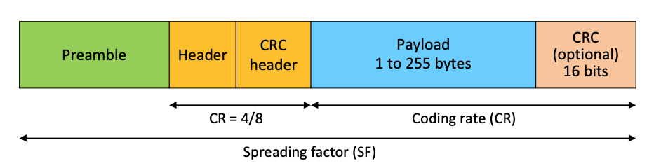
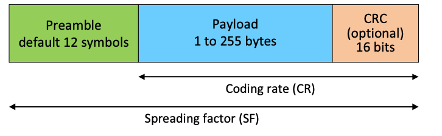
- Il preambolo (12 simboli di default) serve al ricevitore per rilevare il pacchetto e sincronizzarsi; è seguito da 2 simboli di sync word e 2,25 simboli di delimitatore, da cui il termine 4,25 nelle formule.
- L'header, presente solo in modalità esplicita, contiene la lunghezza del payload, il coding rate e la presenza del CRC, ed è protetto da un proprio CRC. Viene sempre trasmesso con CR 4/8 nei primi 8 simboli dopo il preambolo, da cui il termine 8.
- Il payload (da 1 a 255 byte) e il CRC opzionale da 16 bit sono codificati con il coding rate scelto.
Con l'header implicito questi parametri non vengono trasmessi e devono essere già noti a entrambi i lati. Si usa sempre l'header esplicito: telemetria, ACK e comandi dell'ADR hanno lunghezze diverse, e l'header permette al ricevitore di decodificarli senza conoscerle in anticipo. Il costo è di pochi simboli per pacchetto.
Il tempo in aria di un pacchetto è:
dove \(N_{symbol}\) dipende dallo spreading factor:
SF < 7
7 ≤ SF ≤ 10
SF > 10
con: - \(N_{bit\_CRC} = 16\) se il CRC è attivo, 0 altrimenti; - \(N_{symbol\_header} = 20\) con header esplicito, 0 con header implicito; - \(CR = 1, 2, 3, 4\) per i coding rate 4/5, 4/6, 4/7, 4/8.
Per SF > 10 il denominatore diventa \(4\,(SF-2)\): con simboli così lunghi ogni simbolo trasporta 2 bit in meno, per rendere la ricezione più tollerante alle derive di frequenza.
Le formule valgono con l'interleaving standard; con il long interleaving il datasheet fornisce formule diverse.
La velocità effettiva si ricava dal tempo in aria:
Nella tabella riassuntiva si usano: preambolo di 12 simboli, header esplicito, CRC attivo, CR 4/5.
Pacchetto FLRC
Anche il pacchetto FLRC ha due formati: a lunghezza variabile, con header, e a lunghezza fissa, senza header.
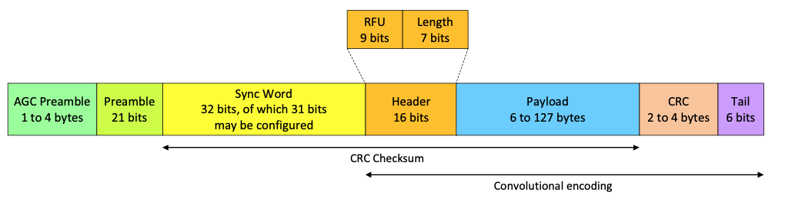
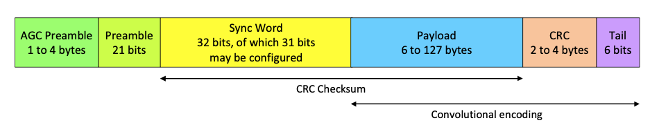
- L'AGC preamble (da 1 a 4 byte) serve al ricevitore per regolare il guadagno; a 1,3 Mb/s può essere ridotto a 1 byte, alle altre velocità ne servono almeno 2.
- Il preambolo da 21 bit serve a recuperare la temporizzazione dei bit.
- La sync word da 32 bit (31 configurabili) identifica l'inizio del pacchetto.
- L'header da 16 bit, presente solo nel formato a lunghezza variabile, contiene la lunghezza del payload (7 bit) e 9 bit riservati.
- Il payload va da 6 a 127 byte.
- Il CRC (2, 3 o 4 byte) è calcolato su tutto il pacchetto tranne i preamboli.
- La coda (tail) di 6 bit a zero chiude la codifica convoluzionale.
Solo payload, CRC e coda sono codificati con il coding rate scelto; preamboli, sync word e header sono trasmessi senza codifica. Come per il LoRa si usa il formato a lunghezza variabile, perché i pacchetti dell'ADR hanno lunghezze diverse.
Il tempo in aria è la somma dei bit non codificati e di quelli codificati, moltiplicata per la durata di un bit:
con: - \(n_{header} = 16\) bit nel formato a lunghezza variabile, 0 in quello a lunghezza fissa; - \(n_{tail} = 6\) bit se \(CR = 1/2\) o \(3/4\), 0 se \(CR = 1\); - \(CR = 1/2, 3/4, 1\) il coding rate programmato; - \(R_b\) il data rate grezzo della combinazione scelta.
La velocità effettiva si ricava come per il LoRa:
Nella tabella riassuntiva si usano: AGC preamble di 2 byte, formato a lunghezza variabile, CRC di 2 byte.
Pacchetto FSK
Anche il pacchetto FSK (GFSK nel datasheet) ha due formati: a lunghezza variabile, con header, e a lunghezza fissa, senza header.
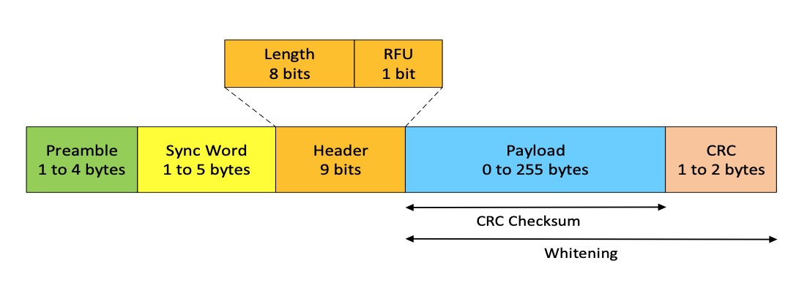
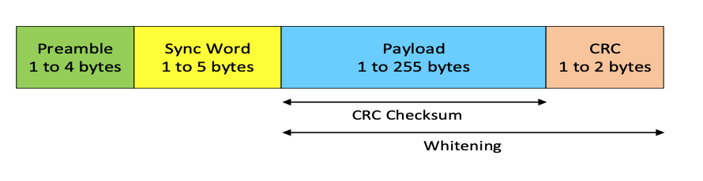
- Il preambolo (da 0,5 a 4 byte, a passi di mezzo byte) serve al ricevitore per sincronizzarsi; a 1 Mb/s è consigliato almeno 1 byte, alle altre velocità ne servono almeno 2.
- La sync word (da 1 a 5 byte) identifica l'inizio del pacchetto.
- L'header da 9 bit, presente solo nel formato a lunghezza variabile, contiene la lunghezza del payload (8 bit) e 1 bit riservato.
- Il payload va da 0 a 255 byte (da 1 a 255 nel formato a lunghezza fissa).
- Il CRC (1 o 2 byte) è calcolato sul solo payload.
Opzionalmente si può attivare il whitening su payload e CRC: i dati vengono mescolati con una sequenza pseudo-casuale per evitare lunghe serie di 0 o di 1, che rendono più difficile al ricevitore mantenere la sincronizzazione. Non aggiunge bit e non cambia il tempo in aria.
Nell'FSK non c'è codifica di canale, quindi tutti i bit sono trasmessi al data rate grezzo e il tempo in aria è:
con \(n_{header} = 9\) bit nel formato a lunghezza variabile e 0 in quello a lunghezza fissa. Il datasheet non fornisce una formula esplicita: questa si ricava direttamente dal formato del pacchetto.
La velocità effettiva è, come per le altre modulazioni:
Nella tabella riassuntiva si usano: preambolo di 2 byte, sync word di 4 byte, formato a lunghezza variabile, CRC di 2 byte.
Tabella riassuntiva delle velocità reali
| # | Modo | Velocità grezza | ToA 64 B | Eff. 32 B | Eff. 64 B | Eff. 127 B |
|---|---|---|---|---|---|---|
| 1 | LoRa SF12/406 | 1,19 kb/s | 900 ms | 0,4 kb/s | 0,6 kb/s | 0,7 kb/s |
| 2 | LoRa SF11/812 | 4,36 kb/s | 250 ms | 1,6 kb/s | 2,0 kb/s | 2,4 kb/s |
| 3 | LoRa SF9/812 | 14,3 kb/s | 62,5 ms | 6,3 kb/s | 8,2 kb/s | 9,5 kb/s |
| 4 | LoRa SF7/812 | 44,4 kb/s | 18,8 ms | 21,9 kb/s | 27,3 kb/s | 30,8 kb/s |
| 5 | FLRC 0,325 CR 3/4 | 244 kb/s | 2,45 ms | 183 kb/s | 209 kb/s | 225 kb/s |
| 6 | FLRC 0,65 CR 3/4 | 488 kb/s | 1,23 ms | 365 kb/s | 418 kb/s | 450 kb/s |
| 7 | FLRC 1,3 CR 3/4 | 975 kb/s | 0,61 ms | 730 kb/s | 835 kb/s | 899 kb/s |
| 8 | FLRC 1,3 CR 1 | 1300 kb/s | 0,47 ms | 932 kb/s | 1086 kb/s | 1182 kb/s |
| 9 | FSK 2,0 | 2000 kb/s | 0,29 ms | 1556 kb/s | 1750 kb/s | 1866 kb/s |
Velocità effettiva = 8 · payload / tempo in aria, con i parametri indicati per ogni modulazione. Per il LoRa la velocità grezza del datasheet non include il Coding Rate 4/5, da cui la differenza maggiore rispetto alle altre modulazioni. Sono esclusi i tempi di commutazione TX/RX e l’ACK.
Isteresi
Se l'ADR cambiasse modo appena il margine attraversa una soglia, un margine che oscilla attorno a quel valore provocherebbe una serie di cambi avanti e indietro. Ogni cambio ha un costo: va coordinato con la ground station, durante la transizione alcuni pacchetti vanno persi e la finestra del PER va azzerata. Con uno shadowing a σ = 4 dB e una distanza di correlazione di 10 m, a 70 km/h il margine cambia di qualche dB ogni mezzo secondo: senza isteresi i cambi sarebbero continui.
L'isteresi rende asimmetrici i due versi del cambio:
- si scende subito, perché restare in un modo senza margine significa perdere pacchetti;
- si sale con cautela, solo se il margine nel nuovo modo resterà comunque sopra il minimo, e solo dopo che la condizione è durata abbastanza a lungo.
Soglie
Le soglie si esprimono sulla potenza ricevuta, confrontandola con la sensibilità effettiva \(S_{eff} = S + \Delta N\) di ogni modo.
Discesa. Dal modo \(i\) si scende quando
e si passa direttamente al modo più veloce \(j < i\) che rispetta \(P_{rx} \ge S_{eff,j} + LM_{min}\), anche saltando più gradini.
Salita. Dal modo \(i\) si sale al modo \(i+1\) quando
con \(H = 3\) dB, e si sale di un solo gradino alla volta.
Così, appena arrivato nel nuovo modo, il margine è di almeno \(LM_{min} + H = 9\) dB, mentre per tornare indietro deve scendere sotto i 6 dB: tra le due soglie c'è sempre una banda di 3 dB, indipendentemente dal salto ΔS tra i gradini. Il valore di 3 dB, circa 0,75σ dello shadowing, è un punto di partenza da tarare durante i test.
Espresso come margine misurato nel modo corrente, il margine necessario per salire è \(LM_{min} + \Delta S_{i+1} + H\):
| Salita | ΔS | Margine richiesto nel modo di partenza | \(P_{rx}\) minima (ΔN = 0) |
|---|---|---|---|
| 1 → 2 | 5 dB | 14 dB | −114 dBm |
| 2 → 3 | 6 dB | 15 dB | −108 dBm |
| 3 → 4 | 5 dB | 14 dB | −103 dBm |
| 4 → 5 | 6 dB | 15 dB | −97 dBm |
| 5 → 6 | 3 dB | 12 dB | −94 dBm |
| 6 → 7 | 3 dB | 12 dB | −91 dBm |
| 7 → 8 | 4 dB | 13 dB | −87 dBm |
| 8 → 9 | 13 dB | 22 dB | −74 dBm |
In ogni modo la discesa avviene invece con margine inferiore a 6 dB.
Tempi
L'isteresi in dB evita i cambi dovuti a piccole oscillazioni, ma non quelli dovuti a picchi brevi. Si aggiungono quindi due condizioni sul tempo, espresse in secondi e non in numero di pacchetti, perché tra il modo 1 e il modo 9 la durata di un pacchetto varia di più di tre ordini di grandezza:
- tempo di conferma \(T_{up}\): la condizione di salita deve restare vera per almeno \(T_{up}=2 s\) prima di cambiare modo;
- tempo di permanenza minimo \(T_{dwell}\): dopo un cambio non si sale di nuovo per almeno \(T_{dwell}=1s\), il tempo necessario a riempire di nuovo la finestra del PER. La discesa resta sempre consentita.
La potenza ricevuta usata nelle soglie è filtrata con una media mobile esponenziale, con costante di tempo dell'ordine di \(T_{up}\), così il fading veloce non entra nella decisione.
Salita fallita
Se subito dopo una salita il PER supera \(\mathrm{PER}_{max}\) pur con margine sufficiente, la causa probabile è un disturbo che il margine non vede, per esempio il Wi-Fi o l'inverter. In questo caso si torna al modo precedente e si raddoppia \(T_{up}\) per quel gradino, fino a un massimo di 30s; il valore torna a quello iniziale dopo una salita riuscita. In questo modo l'ADR smette di riprovare ripetutamente un modo che in quella zona del circuito non funziona.
Modi di emergenza
Nei modi 1 e 2 un pacchetto dura da 0,25 a più di 1 s, quindi una finestra di 100 pacchetti coprirebbe diversi minuti. In questi modi la decisione si basa solo sul margine, misurato pacchetto per pacchetto, e il PER non viene usato.
Sincronizzazione e Feedback Loop
L'algoritmo ADR opera come un sistema di controllo ad anello chiuso. Affinché il microcontrollore a bordo macchina possa svolgere il suo lavoro al meglio ha bisogno di un feedback da parte della ground station, per questo è imperativo costruire una connessione bidirezionale. Questo principalmente per due motivi:
-
Metriche della comunicazione: la scheda a bordo non è in grado di rilevare le metriche riguardanti i pacchetti che invia, quindi è compito della ground station rilevare lo stato del link e permettere all'algoritmo di operare seguendo le specifiche. Senza questo feedback, non sarebbe possibile calcolare il margine di link all'interno della vettura.
-
Parametri di trasmissione e modulazione: il chip Semtech SX1280 riesce a stabilire il link solo se i parametri fisici (Modulazione, Bandwidth, Spreading Factor e Coding Rate) sono identici sia in ricezione che in trasmissione. Qualsiasi transizione della macchina a stati deve essere coordinata tra le due schede in modo deterministico.
Fallback
Potrebbe capitare che, a causa di errori imprevisti o situazioni straordinarie, la connessione tra le due schede si interrompa e che si perda la sincronizzazione della macchina a stati. Per evitare una disconnessione permanente si può utilizzare un set di impostazioni di base da utilizzare. Naturalmente si utilizza questo metodo anche all'accensione della scheda.
Bibliografia
Norme e regolamenti
[1] ETSI EN 300 328 V2.2.2 (2019-07), Wideband transmission systems; Data transmission equipment operating in the 2,4 GHz band; Harmonised Standard for access to radio spectrum.
[2] CEPT ECC, ERC Recommendation 70-03 relating to the use of Short Range Devices (SRD), Annex 1, versione in vigore; ETSI EN 300 220-2, Short Range Devices (SRD) operating in the frequency range 25 MHz to 1 000 MHz; Part 2.
Componenti
[3] Semtech, SX1280/SX1281 – Long Range, Low Power, 2.4 GHz Transceiver with Ranging Capability, Datasheet, Rev. —.
[4] Chengdu Ebyte Electronic Technology, E28-2G4M27SX User Manual, Rev. —.
[5] ISO 11898-1:2015, Road vehicles — Controller area network (CAN) — Part 1: Data link layer and physical signalling.
[6] Texas Instruments, TCAN4550-Q1 Automotive Control Area Network Flexible Data Rate (CAN FD) Controller with Integrated Transceiver, Datasheet, Rev. —.
[7] Espressif Systems, ESP32-S3-WROOM-1 / ESP32-S3-WROOM-1U Datasheet, Rev. —.
[8] Espressif Systems, ESP32-S3 Technical Reference Manual, Rev. —.
[9] Analog Devices, ADP3339 – High Accuracy, 1.5 A, Low Dropout Linear Regulator, Datasheet, Rev. —.
Normativa europea
[10] Direttiva 2014/53/UE del Parlamento europeo e del Consiglio, del 16 aprile 2014, concernente l'armonizzazione delle legislazioni degli Stati membri relative alla messa a disposizione sul mercato di apparecchiature radio (RED), GU L 153 del 22.5.2014, pp. 62–106.
Teoria e modelli di canale
[11] C. E. Shannon, "A Mathematical Theory of Communication", Bell System Technical Journal, vol. 27, pp. 379–423 e 623–656, 1948.
[12] 3GPP TR 38.901 V17.0.0 (2022-03), Study on channel model for frequencies from 0.5 to 100 GHz.
[13] M. Gudmundson, "Correlation model for shadow fading in mobile radio systems", Electronics Letters, vol. 27, n. 23, pp. 2145–2146, 1991.
[14] T. S. Rappaport, Wireless Communications: Principles and Practice, 2ª ed., Prentice Hall, 2002.
Nota: la stesura di alcune parti del testo e la verifica dei calcoli sono state svolte con l'aiuto di un assistente AI (Claude, Anthropic). Tutti i valori e le affermazioni tecniche sono stati controllati sulle fonti primarie sopra elencate.